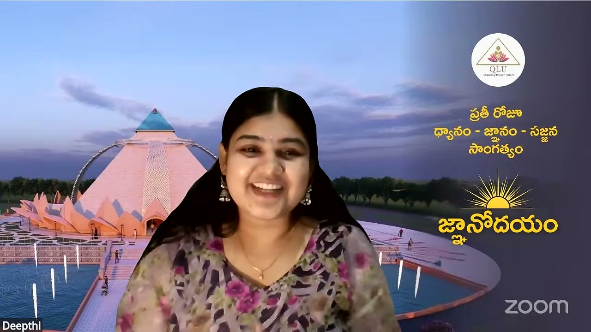
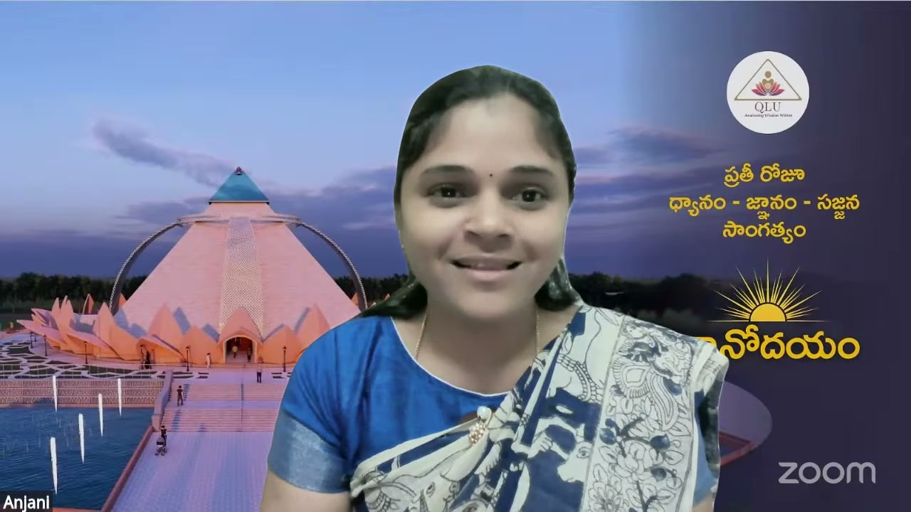
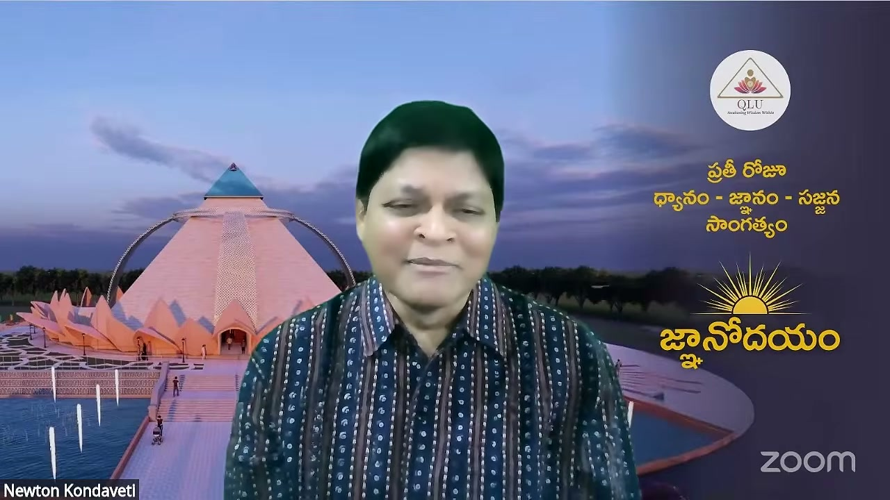
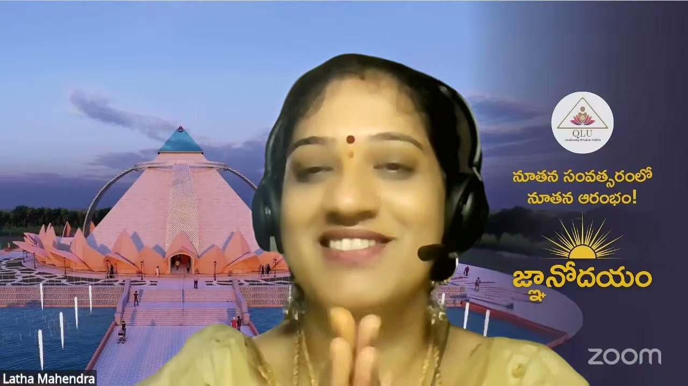
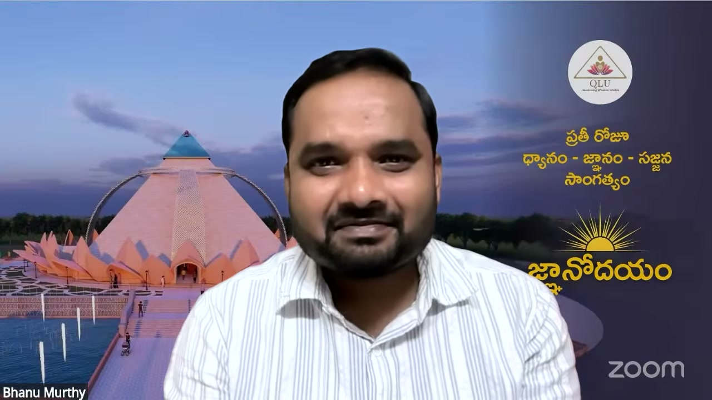
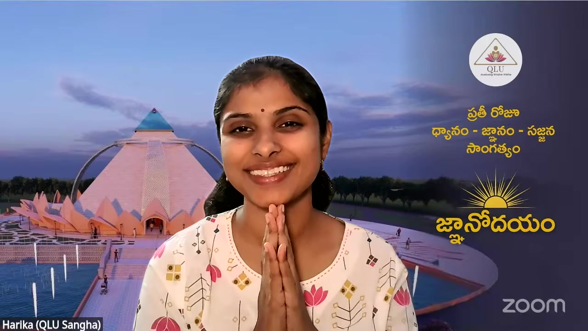

Jnanodayam (Days 529–538) | Ganesha Tattva — From Symbolic Forms to Inner Awakening

గణేశ తత్త్వం — పురాణ గాథల నుంచి ఆత్మస్వరూప జ్ఞానం వైపు
శ్రీ గణేశుని నామరూపాలు, పురాణ గాథల వెనుక దాగి ఉన్న లోతైన ఆధ్యాత్మిక సందేశాలను కృష్ణవేణి గారు ఈ జ్ఞానోదయంలో వివరించారు. ఏకదంతుడు జీవిత పరమార్థాన్ని, మూషిక వాహనుడు మనస్సుపై ఆధిపత్యాన్ని, గణేశుని రూపం శ్రవణం, సూక్ష్మదృష్టి, మితభాషణం, ధ్యానసాధన ప్రాముఖ్యతను తెలియజేస్తాయి. తల్లిదండ్రుల పట్ల ప్రేమ, అంగీకారం, కృతజ్ఞతతో పాటు, జ్ఞానాన్ని కేవలం వినడమే కాకుండా ఆచరణలో పెట్టడం ద్వారా అంతరంగ శుద్ధి, బుద్ధి వికాసం, ఆత్మజాగృతి సాధించాలనే సందేశాన్ని ఈ బోధన అందిస్తుంది.
01 · ఈ నెల ఆధ్యాత్మిక జ్ఞానసారం · పూర్తి కథనం
గణేశ తత్త్వం — పురాణ గాథల నుంచి ఆత్మస్వరూప జ్ఞానం వైపు
శ్రీ గణేశుని నామరూపాలు, పురాణ గాథల వెనుక దాగి ఉన్న లోతైన ఆధ్యాత్మిక సందేశాలను కృష్ణవేణి గారు ఈ జ్ఞానోదయంలో వివరించారు. ఏకదంతుడు జీవిత పరమార్థాన్ని, మూషిక వాహనుడు మనస్సుపై ఆధిపత్యాన్ని, గణేశుని రూపం శ్రవణం, సూక్ష్మదృష్టి, మితభాషణం, ధ్యానసాధన ప్రాముఖ్యతను తెలియజేస్తాయి. తల్లిదండ్రుల పట్ల ప్రేమ, అంగీకారం, కృతజ్ఞతతో పాటు, జ్ఞానాన్ని కేవలం వినడమే కాకుండా ఆచరణలో పెట్టడం ద్వారా అంతరంగ శుద్ధి, బుద్ధి వికాసం, ఆత్మజాగృతి సాధించాలనే సందేశాన్ని ఈ బోధన అందిస్తుంది.
పురాణ గాథల్లోని నిగూఢ అంతరార్థం: Jnanodayam శ్రీ గణేశ సిరీస్లో ముద్గల పురాణాన్ని ఆధారంగా చేసుకుని గణేశ అవతారాల కథల వెనుక ఉన్న ఆధ్యాత్మిక సారాన్ని అన్వేషించారు. పురాణాన్ని కేవలం కథగా వినడం కాకుండా, అందులోని తత్త్వాన్ని మన జీవితానికి అన్వయించుకుని అర్థం చేసుకోవాలనే దృక్పథాన్ని లత గారి బోధన ముందుకు తెచ్చింది.
అష్టావతారాలు — అంతర్గత గుణ పరివర్తన: గణేశుని ఎనిమిది అవతారాలను మనలోని ఈర్ష్య, మదం, మోహం, లోభం, క్రోధం, కామం, మమకారం, అహంకారం వంటి ప్రవృత్తుల పరివర్తనతో అనుసంధానించారు. ఈర్ష్య స్థానంలో ముదిత, మదం స్థానంలో వినయం, మోహం స్థానంలో వివేకం, లోభం స్థానంలో తృప్తి–ఉదారత వికసిస్తాయని వివరించారు. మమకారం విశ్వప్రేమగా, అహంకారం సమత్వంగా మారడమే ఈ బోధనలోని ప్రధాన సందేశం.
గజానన అవతారం — లోభం నుంచి ఉదారతకు: ముద్గల పురాణంలోని గజానన చరిత్ర ద్వారా లోభాసురుని గాథను వివరించారు. ఇందులో వినాయక తత్త్వం రాక్షస గుణాన్ని ద్వేషించి నాశనం చేయడం కంటే, దానిని మార్చి ఉన్నత గుణంగా తీర్చిదిద్దే కరుణామయ స్వరూపంగా ఆవిష్కృతమైంది. గజాననునితో అనుసంధానం ద్వారా లోభత్వం తొలగి ఉదార గుణం కలుగుతుందనే భావాన్ని ప్రత్యేకంగా చెప్పారు.
సగుణ–నిర్గుణ పరబ్రహ్మ స్వరూపం: గజానన రూపాన్ని కేవలం ఏనుగు ముఖం గల దేవతా రూపంగా కాకుండా, సగుణం–నిర్గుణం రెండింటినీ సూచించే పరబ్రహ్మ తత్త్వంగా విశదీకరించారు. రూపం వెనుక ఉన్న ఆధ్యాత్మిక అర్థాన్ని గ్రహించడం ద్వారా మనం ఏది వదులుకోవాలో తెలుసుకునే జ్ఞానం కలుగుతుందని చెప్పారు.
మూషిక వాహనం — మనసు, సచ్చిదానంద స్వరూపం: మన సహజమైన సత్యం, జ్ఞానం, ఆనందం నుంచి దృష్టిని మరల్చే మనసుకు మూషికాన్ని ప్రతీకగా వివరించారు. తెలియకుండానే మన నిజస్వరూపాన్ని మరిపించే మనసుపై అవగాహన పెంపొందించి, తిరిగి ఆ సహజ స్వరూపాన్ని గుర్తించే మార్గాన్ని గణేశ రూపం సూచిస్తుందని బోధించారు.
ధ్యానం, పూజ, అనుసంధానం: గణపతి తత్త్వాన్ని ఇచ్ఛాశక్తి, జ్ఞానశక్తి, క్రియాశక్తులతోనూ, మూలాధార స్థితితోనూ అనుసంధానిస్తూ వివరించారు. పరబ్రహ్మ తత్త్వాన్ని పూజ ద్వారా అయినా, ధ్యానం ద్వారా అయినా అనుభవపూర్వకంగా అనుసంధానించుకోవాలని, ఆ సాధన మనలోని లోభాన్ని ఉదారతగా మార్చే దిశగా నడిపిస్తుందని తెలియజేశారు.

విఘ్నరాజ తత్త్వం — ఆటంకాల నుంచి ఆత్మజాగృతి వైపు
శ్రీ గణేశుని విఘ్నరాజ అవతారం వెనుక ఉన్న ఆధ్యాత్మిక అంతరార్థాన్ని సతీ దీప్తి రెడ్డి గారు ఈ జ్ఞానోదయంలో వివరించారు. జీవితంలో ఎదురయ్యే ఆటంకాలు కేవలం కష్టాలు మాత్రమే కాకుండా, మనల్ని అప్రమత్తం చేసి సరైన మార్గంలో నడిపించే స్పీడ్ బ్రేకర్ల వంటివి అని తెలియజేశారు. మమాసురుని కథ ద్వారా మనలోని అహంకారం, మమకారం, మోహం, ఆధ్యాత్మిక సాధనలో కూడా కలిగే గర్వాన్ని గుర్తించి అధిగమించాల్సిన అవసరాన్ని వివరించారు. ధ్యానం, స్వాధ్యాయం, సజ్జన సాంగత్యం ద్వారా ‘నేను, నాది’ అనే భావనను దాటి, సమూహ చైతన్యం, ఏకత్వ భావన వైపు ఎదగడమే విఘ్నరాజ తత్త్వంలోని ప్రధాన సందేశం.
01 · ఈ నెల ఆధ్యాత్మిక జ్ఞానసారం · పూర్తి కథనం
విఘ్నరాజ తత్త్వం — ఆటంకాల నుంచి ఆత్మజాగృతి వైపు
శ్రీ గణేశుని విఘ్నరాజ అవతారం వెనుక ఉన్న ఆధ్యాత్మిక అంతరార్థాన్ని సతీ దీప్తి రెడ్డి గారు ఈ జ్ఞానోదయంలో వివరించారు. జీవితంలో ఎదురయ్యే ఆటంకాలు కేవలం కష్టాలు మాత్రమే కాకుండా, మనల్ని అప్రమత్తం చేసి సరైన మార్గంలో నడిపించే స్పీడ్ బ్రేకర్ల వంటివి అని తెలియజేశారు. మమాసురుని కథ ద్వారా మనలోని అహంకారం, మమకారం, మోహం, ఆధ్యాత్మిక సాధనలో కూడా కలిగే గర్వాన్ని గుర్తించి అధిగమించాల్సిన అవసరాన్ని వివరించారు. ధ్యానం, స్వాధ్యాయం, సజ్జన సాంగత్యం ద్వారా ‘నేను, నాది’ అనే భావనను దాటి, సమూహ చైతన్యం, ఏకత్వ భావన వైపు ఎదగడమే విఘ్నరాజ తత్త్వంలోని ప్రధాన సందేశం.
ప్రసంగకర్త: సతీ దీప్తి రెడ్డి గారు
అంశం: శ్రీ గణేశుని విఘ్నరాజ అవతారం — ఆటంకాల ఆధ్యాత్మిక అంతరార్థం
మూల వీడియో: https://www.youtube.com/watch?v=iJtG5GNaPng
విఘ్నరాజుడు: ఆటంకాలను తొలగించేవాడే కాదు, వాటి ద్వారా మేల్కొలిపేవాడు
విఘ్నరాజుని సాధారణంగా విఘ్నాలను తొలగించే గణపతిగా ఆరాధిస్తాం. కానీ ఈ బోధనలో విఘ్నరాజ తత్త్వానికి మరొక కోణాన్ని పరిచయం చేశారు. రహదారిపై స్పీడ్ బ్రేకర్ మన వేగాన్ని తగ్గించి పెద్ద ప్రమాదాన్ని నివారించినట్లే, జీవితంలో కొన్ని ఆటంకాలు మన ప్రవర్తనను పరిశీలించుకోవడానికి, ప్రాపంచిక మోహం నుంచి బయటపడడానికి అవకాశం కల్పిస్తాయని వివరించారు. అహంకారంతో, అతిగా ఆసక్తితో ముందుకు సాగుతున్నప్పుడు ఒక విఘ్నం మనల్ని ఆపి ఆధ్యాత్మిక చింతన వైపు మళ్లించే జ్ఞాపికగా మారవచ్చు. అందువల్ల ప్రతి ఆటంకాన్ని వెంటనే తిరస్కరించకుండా, దాని నుంచి నేర్చుకోవాల్సిన పాఠాన్ని ఎరుకతో చూడాలని సూచించారు.
దితి కథ: తపస్సు, కోరిక, మమకారం
కశ్యప మహాముని, దితి, ఇంద్రుని పురాణగాథను వివరిస్తూ, తీవ్రమైన సాధన చేస్తున్నప్పటికీ ఫలితం మీద మమకారం పెరిగితే మనస్సు ఎలా చలించవచ్చో చెప్పారు. దితి తన సంతానంపై ఉన్న బంధం, కోరికలతో తపస్సు చేసిన కథను కర్మ–మమకార చక్రానికి ఉదాహరణగా చూపించారు. సాధన యొక్క బాహ్య క్రమశిక్షణతో పాటు, దాని వెనుక ఉన్న ఉద్దేశం, అంతరంగ స్థితి కూడా ముఖ్యమనే విషయాన్ని ఈ కథ ద్వారా ముందుకు తెచ్చారు.
మమాసురుని జననం: ‘నేను, నాది’ అనే భావనకు ప్రతీక
పార్వతీదేవి తపస్సు, మహాదేవునితో పునఃకలయిక, ఆ సాధనపై కలిగిన గర్వం నుంచి మమాసురుడు ఉద్భవించిన పురాణగాథను దీప్తి గారు వివరించారు. మమాసురుడు అనేది కేవలం బాహ్య రాక్షసుని పేరు మాత్రమే కాకుండా, ప్రతి మనిషిలో ఉండగల మమకారం, అహంకారం, స్వాధీన భావనలకు ప్రతీకగా చూడాలని చెప్పారు. ‘నేను సాధించాను’, ‘ఇది నాదే’, ‘నాకు అన్నీ కావాలి’ అనే ఆలోచనలు పెరిగితే మోహం కూడా పెరుగుతుంది. అప్పుడు తన ప్రయోజనం కోసం ధర్మాధర్మాలను సైతం అనుకూలంగా మార్చుకునే ప్రమాదం ఉందని కథలోని మోహిని, ధర్మ–అధర్ములు, చింతనాశనం వంటి పేర్ల ద్వారా వివరించారు.
విఘ్నరాజుని కమలం: మదానికి విరామం
మమాసురుడు వరబలంతో లోకాలను జయించి, దేవతలను సైతం బంధించే స్థాయికి చేరినప్పుడు విఘ్నరాజుడు ప్రత్యక్షమవుతాడు. ఆయన బాణంతో కాకుండా కమలంతో మమాసురుని మదాన్ని తొలగిస్తాడని ఈ కథలో వివరించారు. అహంకారం తొలగిన తరువాత మమాసురుడు తన తప్పును తెలుసుకొని క్షమాపణ కోరుతాడు. అతనిని గణేశుడు క్షమించి ధర్మమార్గంలో నడిచేవారికి అండగా ఉండమని ఆదేశిస్తాడు. ఈ సంఘటనను శిక్ష కంటే మేల్కొలుపు, మార్పు, క్షమ ప్రధానమైన ఆధ్యాత్మిక సందేశంగా వివరించారు.
ఆధ్యాత్మిక అహంకారం కూడా ఒక విఘ్నమే
ప్రాపంచిక సంపదలు, కుటుంబం, విజయాలపట్ల మాత్రమే కాదు, ధ్యానం లేదా జ్ఞానసాధనలో సాధించిన ప్రగతిపట్ల కూడా గర్వం కలగవచ్చని బోధన హెచ్చరిస్తుంది. ‘నేనే ఎక్కువ సాధన చేశాను’, ‘నాకంటే ఎక్కువ జ్ఞానం ఎవరికీ లేదు’ అనే ఆధ్యాత్మిక అహంకారం సాధకుని ముందడుగును అడ్డుకోవచ్చని చెప్పారు. డాక్టర్ న్యూటన్ గారు వివరించినట్లుగా అహంకారం, మమకారం నుంచి సమూహ చైతన్యం (Group Consciousness) వైపు ఎదగడాన్ని ఇక్కడ ప్రస్తావించారు. ఇతర సాధకుల అనుభవాలు వినడం, పరస్పరం జ్ఞానాన్ని పంచుకోవడం ద్వారా మన స్థితిని మరింత స్పష్టంగా గ్రహించవచ్చని తెలిపారు.
గణపతి — గణాలకు అధిపతి, ఏకత్వ చైతన్యానికి సూచిక
‘గణం’ అంటే సమూహం; ‘గణపతి’ అంటే గణాలకు అధిపతి అనే అర్థాన్ని వివరిస్తూ, వ్యక్తిగత ‘నేను–నాది’ భావనను దాటి సంఘసహకారం, ఏకత్వ చైతన్యంతో అనుసంధానం కావడమే విఘ్నరాజ అవతారంలోని లోతైన సందేశమని చెప్పారు. మనం ఒంటరిగా మన అలవాట్లను, మమకారాన్ని అధిగమించలేనప్పుడు సజ్జనుల సాంగత్యం, సమూహ ధ్యానం, అనుభవాల పంచుకోవడం మనల్ని తిరిగి సాధనామార్గంలో నిలబెడతాయని వివరించారు. ధ్యానం, స్వాధ్యాయం, సజ్జన సాంగత్యం అనే మూడు మూలసూత్రాలను ఆచరణలో ఉంచాలని సూచించారు.
జీవితంలో ఆచరణ
ఈ బోధనను విన్న తరువాత మనకు గతంలో ఎదురైన ఆటంకాలను గుర్తుచేసుకొని, వాటి నుంచి ఏమి నేర్చుకున్నామో పరిశీలించాలని చర్చలో సూచించారు. మనలో ‘నేను, నాది’ అనే భావన ఎప్పుడు బలపడుతుందో గమనించడం, జ్ఞానాన్ని అంధంగా నమ్మకుండా స్వయంగా అధ్యయనం చేయడం, అంతరాత్మతో పరిశీలించడం, సజ్జన సాంగత్యంలో ఉండడం ద్వారా ఆధ్యాత్మిక ఎరుకను పెంచుకోవచ్చని తెలియజేశారు. విఘ్నరాజుని ఆరాధించడం అంటే కేవలం అడ్డంకులు తొలగిపోవాలని కోరుకోవడం మాత్రమే కాకుండా, అవి అందించే పాఠాలను స్వీకరించి ధర్మం, వినయం, ఏకత్వంతో ముందుకు సాగడం అని ఈ జ్ఞానోదయం గుర్తుచేస్తుంది.

వక్రతుండ తత్త్వం — అసూయ నుంచి ఆత్మజ్ఞానం వైపు
శ్రీ గణేశుని వక్రతుండ అవతారం ద్వారా మనలోని అసూయ, పోలికలు, మదం, అహంకారం ఎలా పెరుగుతాయో హారిక సూరి గారు వివరించారు. మత్సరాసురుని పురాణగాథ మన అంతరంగంలో దైవిక గుణాలు, అసుర గుణాల మధ్య జరిగే సంఘర్షణకు ప్రతీకగా నిలుస్తుంది. వక్రతుండం మన ఆలోచనల్లో సరళతను, సింహవాహనం ధైర్యాన్ని, సిద్ధి–బుద్ధి జ్ఞానం ద్వారా కలిగే అంతర్గత పరిపూర్ణతను సూచిస్తాయని తెలిపారు. ఇతరులతో పోల్చుకోవడం మానుకుని, ప్రతి ఒక్కరి ప్రత్యేకతను గౌరవిస్తూ, ధ్యానం, స్వాధ్యాయం, నిరంతర సాధన ద్వారా ఆనందం, సంతృప్తి, ఆత్మజ్ఞానం వైపు సాగాలని ఈ బోధన గుర్తుచేస్తుంది.
01 · ఈ నెల ఆధ్యాత్మిక జ్ఞానసారం · పూర్తి కథనం
వక్రతుండ తత్త్వం — అసూయ నుంచి ఆత్మజ్ఞానం వైపు
శ్రీ గణేశుని వక్రతుండ అవతారం ద్వారా మనలోని అసూయ, పోలికలు, మదం, అహంకారం ఎలా పెరుగుతాయో హారిక సూరి గారు వివరించారు. మత్సరాసురుని పురాణగాథ మన అంతరంగంలో దైవిక గుణాలు, అసుర గుణాల మధ్య జరిగే సంఘర్షణకు ప్రతీకగా నిలుస్తుంది. వక్రతుండం మన ఆలోచనల్లో సరళతను, సింహవాహనం ధైర్యాన్ని, సిద్ధి–బుద్ధి జ్ఞానం ద్వారా కలిగే అంతర్గత పరిపూర్ణతను సూచిస్తాయని తెలిపారు. ఇతరులతో పోల్చుకోవడం మానుకుని, ప్రతి ఒక్కరి ప్రత్యేకతను గౌరవిస్తూ, ధ్యానం, స్వాధ్యాయం, నిరంతర సాధన ద్వారా ఆనందం, సంతృప్తి, ఆత్మజ్ఞానం వైపు సాగాలని ఈ బోధన గుర్తుచేస్తుంది.
ప్రసంగకర్త: హారిక సూరి గారు
అంశం: శ్రీ గణేశుని వక్రతుండ అవతారం — మత్సరాసురుని కథలోని ఆధ్యాత్మిక అంతరార్థం
మూల వీడియో: https://www.youtube.com/watch?v=5f37J9rtITg
విస్తృత సారాంశం — Read more
మత్సరాసురుని కథ — అసూయకు ఒక రూపకం
వక్రతుండ అవతార కథలో మత్సరాసురుడు ప్రధాన పాత్ర. పురాణంలో అతని జననం, పెరుగుదల, వరబలం, అధికార విస్తరణను వివరిస్తూ, మత్సరం అంటే అసూయ లేదా ఈర్ష్య అనే భావాన్ని ప్రసంగకర్త ముందుకు తెచ్చారు. మనకన్నా మరొకరికి మంచి గుర్తింపు, సంపద లేదా ఆధ్యాత్మిక అనుభవం లభించినప్పుడు కలిగే అసంతృప్తి క్రమంగా అహంకారంగా మారవచ్చని చెప్పారు. కథలోని అసురుడిని బయట ఉన్న శత్రువుగా మాత్రమే కాకుండా, మనలో అప్పుడప్పుడు బలపడే ఒక గుణానికి ప్రతీకగా చూడాలని సూచించారు.
మదం–మాత్సర్యం నుంచి బాహ్య విషయాలపై మోహం
మత్సరాసురుని కుటుంబ కథను అరిషడ్వర్గాల భావనతో అనుసంధానించారు. మదం అంటే గర్వం; మాత్సర్యం అంటే అసూయ. ఈ రెండూ కలిసినప్పుడు మన రూపం, ఆస్తులు, హోదా, చదువు, విజయాలు, చేసిన సేవ లేదా చెప్పిన తరగతుల గురించి ఇతరులకు నిరూపించుకోవాలనే తపన పెరుగుతుందని వివరించారు. కథలోని సుందరప్రియ, విషయప్రియ అనే పేర్లను సౌందర్యం, బాహ్య విషయాల పట్ల అతిగా ఆకర్షితులయ్యే మనస్తత్వానికి ప్రతీకలుగా చూపించారు. ఇవన్నీ మనలో ఉన్నాయని గుర్తించడం వాటి ప్రభావాన్ని తగ్గించే తొలి అడుగు.
వక్రతుండం — ఒకే దారికి కట్టుబడని సరళమైన మనసు
‘వక్ర’ అంటే వంకర, ‘తుండ’ అంటే తొండం. ఏనుగు తొండం వంగి, పరిస్థితికి అనుగుణంగా కదులుతుంది. దీనిని ఉదాహరణగా తీసుకుని, ‘నేను అనుకున్న మార్గమే సరైనది’ అనే కఠిన వైఖరికి బదులు ఆలోచనల్లో సరళత అవసరమని వివరించారు. ఆధ్యాత్మిక సాధనలో అందరికీ ఒకే పద్ధతి సరిపోవాలని పట్టుబట్టాల్సిన అవసరం లేదని, ఏ మార్గమైనా మన నిజస్వరూపాన్ని తెలుసుకోవడానికి సహాయపడుతుందా అనేదే ముఖ్యమని చెప్పారు. తాను ఆనాపానసతి ధ్యానాన్ని ఆచరిస్తున్నప్పటికీ, ఇతరులకు తమకు అనుకూలమైన సాధనను కొనసాగించే స్వేచ్ఛ ఇవ్వాలనే ఉదాహరణను పంచుకున్నారు.
సింహవాహనం — ధైర్యం, అంతర్గత బలం
ఈ అవతారంలో వక్రతుండుడు సింహంపై రావడం వెనుక ఉన్న భావాన్ని కూడా వివరించారు. సింహం ధైర్యం, శక్తి, నిర్భయత్వానికి సూచిక. అసూయ, అహంకారం వంటి గుణాలను ఎదుర్కోవడానికి మనసులో సరళతతో పాటు ధైర్యం, అంతర్గత బలం అవసరమని చెప్పారు. మనలో ఒక ప్రతికూల భావం కనిపించినంత మాత్రాన మనల్ని మనం పూర్తిగా చెడ్డవారిగా నిర్ణయించుకోకుండా, ఆ భావాన్ని ఎరుకతో గమనించి మార్చుకోవచ్చని గుర్తుచేశారు.
ధర్మం వైపు నిలిచే వక్రతుండుడు
మత్సరాసురుడు దేవతలను ఓడించినప్పుడు వారు గణేశుని ఆశ్రయిస్తారు. వక్రతుండుడు ధర్మాన్ని రక్షించేందుకు ముందుకు వస్తాడు. ‘దేవతలూ, అసురులూ ఒకే సృష్టిలో భాగాలైతే ఒక పక్షాన ఎందుకు నిలుస్తారు?’ అని మత్సరాసురుడు అడిగిన ప్రశ్నను ప్రసంగకర్త ప్రత్యేకంగా చర్చించారు. అధర్మం మితిమీరినప్పుడు సమతుల్యతను పునరుద్ధరించడమే ధర్మం అని వక్రతుండుడు సమాధానం ఇచ్చే కథాంశాన్ని వివరించారు. ఆయన దివ్యస్వరూపాన్ని దర్శించిన మత్సరాసురుడు తన తప్పును గ్రహించి క్షమాపణ కోరుతాడు. ఇక్కడ ప్రధాన సందేశం ప్రతికూల గుణాన్ని గుర్తించి దానికి సరైన స్థానం కల్పించడం, ధర్మబద్ధంగా జీవించడం.
సిద్ధి–బుద్ధి, ప్రమోద–ఆమోద — మనలోని దైవిక శక్తులు
కథలో ప్రస్తావించిన సిద్ధి, బుద్ధిలను అంతర్గత పరిపూర్ణత, జ్ఞానానికి సూచికలుగా వివరించారు. ప్రమోద, ఆమోదలను ఆనందం, సంతోషం, సంతృప్తితో అనుసంధానించారు. అసూయ వంటి ప్రతికూల ఆలోచనలు బలపడినప్పుడు మనలోని మంచి గుణాలు కనిపించకుండా పోయినట్లనిపిస్తుందని, అయితే అవి పూర్తిగా నశించవని చెప్పారు. మన సాధన, జ్ఞానం, ఆనందాన్ని మళ్లీ గుర్తుచేసుకుంటే దైవిక గుణాలకు బలం చేకూరుతుందని వివరించారు.
బ్రహ్మప్రియ, సర్వగ, సర్వవిత్ — బాహ్య గుర్తింపును దాటి
ఇతరుల ప్రశంసలు, ఆధ్యాత్మిక అనుభవాలు లేదా విజయాలతో మనల్ని పోల్చుకుంటున్నప్పుడు అసూయ కలగవచ్చు. అలాంటి సమయంలో మన లక్ష్యం బాహ్య గుర్తింపు కాదని, బ్రహ్మజ్ఞానం అని గుర్తుచేసుకోవాలని సూచించారు. కథలోని బ్రహ్మప్రియను ఆత్మజ్ఞానం పట్ల ప్రేమగా, సర్వగను అంతటా వ్యాపించిన చైతన్యంగా, సర్వవిత్ను సమగ్ర జ్ఞానానికి సూచికగా వివరించారు. మన దృష్టి బాహ్య పోలికల నుంచి అంతర్గత జ్ఞానంపైకి మళ్లినప్పుడు అసూయ ప్రభావం తగ్గుతుందని తెలిపారు.
నిరంతర సాధన — ఎరుకతో గుణపరివర్తన
ఒకసారి జ్ఞానం విన్నంత మాత్రాన అసూయ, అహంకారం శాశ్వతంగా తొలగిపోవని ఈ ప్రసంగం గుర్తుచేస్తుంది. మరొకరి విజయాన్ని చూసి మనలో కలిగే స్పందనను గమనించడం, మనకు ఇప్పటికే ఉన్న సద్గుణాలను గుర్తించడం, ఆనందం–సంతృప్తిని పెంపొందించుకోవడం ముఖ్యమని వివరించారు. ప్రతికూల భావాలను ద్వేషించకుండా వాటిని అర్థం చేసుకుని, ఏ గుణాలకు బలం ఇవ్వాలో ఎరుకతో నిర్ణయించుకోవాలని సూచించారు. ధ్యానం, స్వాధ్యాయం, సాధనను కొనసాగించడం ద్వారానే ఈ పరివర్తన స్థిరపడుతుందని ముగించారు.

శ్రీ గణేశుడు – తులసి కథ: ఆకర్షణ, తిరస్కరణ నుంచి చైతన్య పరివర్తన వైపు
ఈ జ్ఞానోదయం కార్యక్రమంలో శ్రీ గణేశుడు–తులసి అంశాన్ని ఆధ్యాత్మిక దృష్టితో పరిశీలిస్తూ, కథలలోని అంతరార్థాన్ని తెలుసుకోవడం, ఆకర్షణ–తిరస్కరణ వంటి భావోద్వేగాలను గమనించడం, నిశ్చలత ద్వారా చైతన్య పరిణామం వైపు సాగడం వంటి అంశాలు ప్రస్తావనకు వచ్చాయి. విభిన్న కథా రూపాల కంటే వాటి ద్వారా పొందే అవగాహన ముఖ్యమనే దిశలో చర్చ సాగినట్లు అందుబాటులోని క్యాప్షన్లు సూచిస్తున్నాయి.
01 · ఈ నెల ఆధ్యాత్మిక జ్ఞానసారం · పూర్తి కథనం
శ్రీ గణేశుడు – తులసి కథ: ఆకర్షణ, తిరస్కరణ నుంచి చైతన్య పరివర్తన వైపు
ఈ జ్ఞానోదయం కార్యక్రమంలో శ్రీ గణేశుడు–తులసి అంశాన్ని ఆధ్యాత్మిక దృష్టితో పరిశీలిస్తూ, కథలలోని అంతరార్థాన్ని తెలుసుకోవడం, ఆకర్షణ–తిరస్కరణ వంటి భావోద్వేగాలను గమనించడం, నిశ్చలత ద్వారా చైతన్య పరిణామం వైపు సాగడం వంటి అంశాలు ప్రస్తావనకు వచ్చాయి. విభిన్న కథా రూపాల కంటే వాటి ద్వారా పొందే అవగాహన ముఖ్యమనే దిశలో చర్చ సాగినట్లు అందుబాటులోని క్యాప్షన్లు సూచిస్తున్నాయి.
ప్రసంగకర్త: Surya Subbaraju Bhupathiraju
మూల అంశం: Sri Ganesha – Tulsi
వీడియో: https://www.youtube.com/watch?v=hkogp-8uRhM
ఈ జ్ఞానోదయం కార్యక్రమంలో శ్రీ గణేశుడు–తులసి అంశాన్ని ఆధ్యాత్మిక దృష్టితో పరిశీలిస్తూ, కథలలోని అంతరార్థాన్ని తెలుసుకోవడం, ఆకర్షణ–తిరస్కరణ వంటి భావోద్వేగాలను గమనించడం, నిశ్చలత ద్వారా చైతన్య పరిణామం వైపు సాగడం వంటి అంశాలు ప్రస్తావనకు వచ్చాయి. విభిన్న కథా రూపాల కంటే వాటి ద్వారా పొందే అవగాహన ముఖ్యమనే దిశలో చర్చ సాగినట్లు అందుబాటులోని క్యాప్షన్లు సూచిస్తున్నాయి.

మహోదర తత్త్వం — భావోద్వేగాలు, అనుబంధాలపై ఆధ్యాత్మిక పరిశీలన
ఈ జ్ఞానోదయం 533వ రోజు కార్యక్రమంలో అంజని గారు శ్రీ గణేశుని మహోదర తత్త్వం అంశంపై ప్రసంగించారు. భావోద్వేగాలు, వాటిని అణచివేయడం, సంబంధాలు, అనుబంధం వంటి అంశాల ప్రస్తావన.
01 · ఈ నెల ఆధ్యాత్మిక జ్ఞానసారం · పూర్తి కథనం
మహోదర తత్త్వం — భావోద్వేగాలు, అనుబంధాలపై ఆధ్యాత్మిక పరిశీలన
ఈ జ్ఞానోదయం 533వ రోజు కార్యక్రమంలో అంజని గారు శ్రీ గణేశుని మహోదర తత్త్వం అంశంపై ప్రసంగించారు. భావోద్వేగాలు, వాటిని అణచివేయడం, సంబంధాలు, అనుబంధం వంటి అంశాల ప్రస్తావన.
ప్రసంగకర్త: Anjani
మూల అంశం: Sri Ganesha – Mahodhara
వీడియో: https://www.youtube.com/watch?v=blDiczvXR9c
Read more — పూర్తి కార్యక్రమం వీక్షించండి
1. మహోదర అంశంతో ప్రారంభమైన జ్ఞానోదయం
2. భావోద్వేగాలు మరియు అణచివేత
3. సంబంధాలు మరియు అనుబంధం
4. ఇతర ప్రసంగ భాగాలు, పాల్గొన్నవారి స్పందనలు

వినాయక చవితి — గణేశ తత్త్వంలోని యోగ రహస్యాలు
వినాయక చవితి కేవలం పండుగ ఆచారాల సమాహారం కాదని, గణేశుని నామాలు, రూపం, వాహనం, పురాణ కథల వెనుక ధ్యానం, ఆత్మనియంత్రణ, అహంకార–మమకార విముక్తి, జ్ఞానానందాల సాధన వంటి లోతైన యోగ రహస్యాలు దాగి ఉన్నాయని Dr. Newton Kondaveti గారు ఈ ప్రత్యేక జ్ఞానోదయ బోధనలో వివరించారు. ‘ఏకం సత్ విప్రా బహుధా వదంతి’ అనే భావనతో వివిధ దైవనామాల వెనుక ఒకే పరబ్రహ్మ తత్త్వాన్ని దర్శించాలని సూచించారు. వినాయకుడు అనే నామాన్ని సర్వోన్నత నాయకత్వంతోపాటు అంతర్గత శిక్షణ, ఆత్మనియంత్రణకు అన్వయించారు; గజముఖం అహంకారాన్ని అధిగమించడాన్ని, మూషిక వాహనం ‘నాది’ అనే మమకారాన్ని అదుపులో ఉంచడాన్ని సూచిస్తాయని వివరించారు. వక్రతుండుడు మన వక్ర ఆలోచనలు, విఘ్నాలను సరిచేసే తత్త్వానికి ప్రతీక కాగా, గణపతి నామంలో జ్ఞానం, ఆనందం సందేశాన్ని ఆవిష్కరించారు. సిద్ధి–బుద్ధి, లాభం–క్షేమం, గణాధిపత్యం వంటి ప్రతీకలను సాధకుని అంతర్గత వికాసంతో అనుసంధానించారు. శమంతకమణి కథ, చంద్రదర్శనానికి సంబంధించిన పురాణ ఘట్టాలు, తల్లిదండ్రుల చుట్టూ గణేశుని ప్రదక్షిణలోని అంతరార్థాలను వివరించి, నిజమైన వినాయక పూజ అనేది బాహ్య ఆడంబరాల కంటే అంతర్ముఖ ధ్యానం, ఆత్మప్రదక్షిణ, జ్ఞానాన్ని ఆచరణలోకి తీసుకురావడం అని తెలియజేశారు.
01 · ఈ నెల ఆధ్యాత్మిక జ్ఞానసారం · పూర్తి కథనం
వినాయక చవితి — గణేశ తత్త్వంలోని యోగ రహస్యాలు
వినాయక చవితి కేవలం పండుగ ఆచారాల సమాహారం కాదని, గణేశుని నామాలు, రూపం, వాహనం, పురాణ కథల వెనుక ధ్యానం, ఆత్మనియంత్రణ, అహంకార–మమకార విముక్తి, జ్ఞానానందాల సాధన వంటి లోతైన యోగ రహస్యాలు దాగి ఉన్నాయని Dr. Newton Kondaveti గారు ఈ ప్రత్యేక జ్ఞానోదయ బోధనలో వివరించారు. ‘ఏకం సత్ విప్రా బహుధా వదంతి’ అనే భావనతో వివిధ దైవనామాల వెనుక ఒకే పరబ్రహ్మ తత్త్వాన్ని దర్శించాలని సూచించారు. వినాయకుడు అనే నామాన్ని సర్వోన్నత నాయకత్వంతోపాటు అంతర్గత శిక్షణ, ఆత్మనియంత్రణకు అన్వయించారు; గజముఖం అహంకారాన్ని అధిగమించడాన్ని, మూషిక వాహనం ‘నాది’ అనే మమకారాన్ని అదుపులో ఉంచడాన్ని సూచిస్తాయని వివరించారు. వక్రతుండుడు మన వక్ర ఆలోచనలు, విఘ్నాలను సరిచేసే తత్త్వానికి ప్రతీక కాగా, గణపతి నామంలో జ్ఞానం, ఆనందం సందేశాన్ని ఆవిష్కరించారు. సిద్ధి–బుద్ధి, లాభం–క్షేమం, గణాధిపత్యం వంటి ప్రతీకలను సాధకుని అంతర్గత వికాసంతో అనుసంధానించారు. శమంతకమణి కథ, చంద్రదర్శనానికి సంబంధించిన పురాణ ఘట్టాలు, తల్లిదండ్రుల చుట్టూ గణేశుని ప్రదక్షిణలోని అంతరార్థాలను వివరించి, నిజమైన వినాయక పూజ అనేది బాహ్య ఆడంబరాల కంటే అంతర్ముఖ ధ్యానం, ఆత్మప్రదక్షిణ, జ్ఞానాన్ని ఆచరణలోకి తీసుకురావడం అని తెలియజేశారు.
ప్రసంగకర్త: Dr. Newton Kondaveti
అంశం: వినాయక చవితి విశిష్టత, గణేశుని నామరూపాల ఆధ్యాత్మిక అంతరార్థం
మూల వీడియో: https://www.youtube.com/watch?v=9huEkbQEwzA
ఒకే పరబ్రహ్మ తత్త్వం — అనేక దైవనామాలు
భారతీయ పండుగలు, దేవతా రూపాలు కేవలం వేర్వేరు ఆరాధనా సంప్రదాయాలుగా కాకుండా, ఒకే సత్యాన్ని వివిధ కోణాల్లో అర్థం చేసుకునే అవకాశాలుగా చూడాలని బోధన ప్రారంభమైంది. ‘ఏకం సత్ విప్రా బహుధా వదంతి’ అనే వేదవాక్యాన్ని ప్రస్తావిస్తూ, వినాయకుని రూపంలోనూ సర్వాంతర్యామి చైతన్యాన్ని గుర్తించవచ్చని వివరించారు. పండుగను జరుపుకునే ముందు దాని ఆధ్యాత్మిక విశిష్టతను తెలుసుకోవడం ముఖ్యమని సూచించారు.
వినాయకుడు, గజముఖుడు, మూషిక వాహనుడు
‘వినాయకుడు’ అనే పేరును తనకు మించిన నాయకుడు లేని పరమ తత్త్వంగా, అలాగే మనలో ఆత్మశిక్షణను పెంపొందించే శక్తిగా వివరించారు. గజముఖ రూపాన్ని అహంకారాన్ని దాటిన స్థితికి సంకేతంగా, మూషికాన్ని దాచుకోవడం, కూడబెట్టుకోవడం, ‘నాది’ అని పట్టుకోవడం వంటి మమకార స్వభావానికి ప్రతీకగా అన్వయించారు. మూషికాన్ని వాహనంగా చేసుకోవడం అంటే మమకారానికి బానిస కాకుండా దానిపై ఆధిపత్యం సాధించడం అనే సందేశాన్ని వివరించారు.
వక్రతుండుడు, గణపతి, విఘ్నేశ్వరుడు
వక్రంగా ఉండే తొండాన్ని ప్రణవస్వరూపం, శ్వాససాధనతో అనుసంధానించడంతోపాటు వక్రబుద్ధి, వక్రమార్గం, జీవితంలోని విఘ్నాలను సరిచేసే శక్తికి ప్రతీకగా వివరించారు. ‘గణపతి’ అనే నామంలో జ్ఞానం, ఆనందం అనే అంతరార్థాన్ని చూపించారు. జీవితంలో ఎదురయ్యే అడ్డంకులు కొన్నిసార్లు ఆత్మపరిశీలనకు, ధ్యానమార్గంలోకి ప్రవేశించడానికి కారణమవుతాయని చెప్పి, విఘ్నేశ్వర తత్త్వాన్ని విస్తృతంగా విశ్లేషించారు.
సిద్ధి–బుద్ధి, లాభం–క్షేమం, గణాధిపత్యం
సిద్ధి, బుద్ధి అనే పేర్లను సాధకునిలో వికసించే ఆధ్యాత్మిక సామర్థ్యం, వివేకం, బుద్ధత్వం వంటి స్థితులతో అనుసంధానించారు. లాభం, క్షేమం అనే పేర్లను పొందవలసినది పొందడం, పొందినదాన్ని సంరక్షించుకోవడం అనే భావాలతో వివరించారు. ‘గణం’ అంటే సమూహం అని చెబుతూ, శరీరంలోని కణసమూహాల నుంచి జీవరాశుల వరకు సమస్త గణాల్లో పనిచేసే చైతన్యానికి గణపతి ప్రతీక అని వివరించారు.
చంద్రదర్శనం, శమంతకమణి కథల అంతరార్థం
వినాయక చవితి సందర్భంగా చంద్రుణ్ని చూడకూడదనే ఆచారం, నీలాపనిందలు, శ్రీకృష్ణునికి సంబంధించిన శమంతకమణి కథలను ప్రస్తావించారు. వీటిని కేవలం బాహ్య సంఘటనలుగా తీసుకోకుండా, వాటిలోని ఆధ్యాత్మిక సంకేతాలను పరిశీలించాలని సూచించారు. శమంతకమణిని ధరించడానికి అవసరమైన యోగ్యత, జాంబవంతునితో యుద్ధంలో తత్త్వాలను జయించడం వంటి అంశాలను సాధకుని అంతర్గత ప్రయాణానికి అన్వయించారు.
ఆత్మప్రదక్షిణ, మూలాధార తత్త్వం
గణేశుడు శివపార్వతుల చుట్టూ ప్రదక్షిణ చేయడాన్ని మనలోని దివ్యచైతన్యాన్ని దర్శించే ఆత్మప్రదక్షిణగా వివరించారు. మూలాధారంలో గణపతి తత్త్వం, కుండలినీ శక్తి జాగృతి, సాధనకు అవసరమైన యోగ్యత గురించి మాట్లాడారు. అంతర్ముఖంగా ప్రయాణించడం, ధ్యానంతో మనస్సును శుద్ధి చేసుకోవడం, పురాణాల అంతరార్థాన్ని గ్రహించడం నిజమైన పండుగ సాధన అని సందేశమిచ్చారు.
వినాయక చవితి — ఆచరణలో జ్ఞానోత్సవం
బాహ్య ఉత్సవాలకే పరిమితం కాకుండా ధ్యానం, జ్ఞానశ్రవణం, ఆత్మపరిశీలన ద్వారా వినాయక చవితిని అర్థవంతంగా జరుపుకోవాలని బోధన ముగింపులో సూచించారు. గణేశ తత్త్వం గురించి తెలుసుకోవడం అంటే మనలోని జ్ఞానం, ఆనందం, వినయం, ఆత్మనియంత్రణను మేల్కొల్పుకునే దిశగా ప్రయాణించడం అనే భావనను ప్రధానంగా నిలిపారు.

గజానన అవతారం — లోభం నుంచి విశాలమైన ప్రేమ వైపు
గజాననుడు అంటే కేవలం ఏనుగు ముఖం కలిగిన దేవుడు మాత్రమేనా? ముద్గల పురాణంలోని గజానన అవతార కథను లతా మహేంద్ర గారు పరిచయం చేస్తూ, లోభం, తృష్ణ, ఈర్ష్య వంటి మనోప్రవృత్తులు మనలో ఎలా పనిచేస్తాయో వివరిస్తారు. నిర్గుణ తత్త్వం అనేక సగుణ రూపాల్లో వ్యక్తమవుతుందనే దృష్టితో గణపతి ఆరాధనను చూడాలని సూచిస్తారు. గజానన నామంలోని అంతరార్థం, మూషిక వాహన ప్రతీక, సంకల్పం, కర్మ, ఆత్మపరిశీలన వంటి అంశాలు ఈ బోధనలో పరస్పరం ముడిపడి ఉంటాయి. కథను వినడమే కాకుండా, మన కోరికలు ఎక్కడ అవసరాన్ని దాటి అంతులేని తృష్ణగా మారుతున్నాయో గమనించడానికి ఈ ప్రసంగం ఆహ్వానిస్తుంది.
01 · ఈ నెల ఆధ్యాత్మిక జ్ఞానసారం · పూర్తి కథనం
గజానన అవతారం — లోభం నుంచి విశాలమైన ప్రేమ వైపు
గజాననుడు అంటే కేవలం ఏనుగు ముఖం కలిగిన దేవుడు మాత్రమేనా? ముద్గల పురాణంలోని గజానన అవతార కథను లతా మహేంద్ర గారు పరిచయం చేస్తూ, లోభం, తృష్ణ, ఈర్ష్య వంటి మనోప్రవృత్తులు మనలో ఎలా పనిచేస్తాయో వివరిస్తారు. నిర్గుణ తత్త్వం అనేక సగుణ రూపాల్లో వ్యక్తమవుతుందనే దృష్టితో గణపతి ఆరాధనను చూడాలని సూచిస్తారు. గజానన నామంలోని అంతరార్థం, మూషిక వాహన ప్రతీక, సంకల్పం, కర్మ, ఆత్మపరిశీలన వంటి అంశాలు ఈ బోధనలో పరస్పరం ముడిపడి ఉంటాయి. కథను వినడమే కాకుండా, మన కోరికలు ఎక్కడ అవసరాన్ని దాటి అంతులేని తృష్ణగా మారుతున్నాయో గమనించడానికి ఈ ప్రసంగం ఆహ్వానిస్తుంది.
ప్రసంగకర్త: లతా మహేంద్ర గారు
అంశం: గజానన అవతారం — లోభం నుంచి విశాలమైన ప్రేమ వైపు
మూల వీడియో: https://www.youtube.com/watch?v=jzyGYDX50vg
పురాణ కథను తత్త్వబోధగా చదవడం
గణేశ తత్త్వంపై ఈ శ్రేణి ప్రసంగాల సందర్భాన్ని గుర్తుచేస్తూ, లతా మహేంద్ర గారు ముద్గల పురాణానికి, దానిని అందరికీ చేరువ చేసిన గణేశ యోగేంద్ర మహారాజు కృషికి ప్రాధాన్యం ఇస్తారు. పురాణ కథల్లోని పేర్లు, రూపాలు, సంఘటనలను కేవలం అద్భుతాలుగా చూసి ఆగిపోకుండా వాటి వెనుక మనిషి అంతరంగానికి సంబంధించిన సందేశాన్ని పరిశీలించాలని ఆమె సూచిస్తారు. ఒకే గణేశ తత్త్వం వివిధ అవతారాల్లో చెప్పబడటం కూడా మనలోని వేర్వేరు ప్రవృత్తులను అర్థం చేసుకోవడానికి ఒక మార్గంగా ఆమె వివరిస్తారు.
ఒక రూపాన్ని మరొక రూపంతో పోల్చి ఏ దేవుడు గొప్పవాడనే చర్చలో నిలిచిపోకుండా, ఆ రూపం ద్వారా బోధించబడుతున్న తత్త్వాన్ని గ్రహించడం ముఖ్యమని ప్రసంగంలో చెబుతారు. వివిధ పాత్రలు ధరించే నటుడి ఉదాహరణతో, రూపాలు మారినా వాటి ఆధారమైన చైతన్యాన్ని గుర్తించవచ్చని వివరించారు.
నిర్గుణం, సగుణం — ఒకే తత్త్వానికి రెండు దృక్కోణాలు
రూపం, పేరు, లక్షణాలు లేకుండా చెప్పబడే నిర్గుణ తత్త్వం భక్తునికి అర్థమయ్యేలా సగుణ రూపాల్లో ఆరాధించబడుతుందని ప్రసంగకర్త వివరిస్తారు. గణపతి ఒక నిర్దిష్ట మూర్తి మాత్రమే కాదు; ఆ రూపం ద్వారా విశ్వవ్యాప్తమైన సూత్రాన్ని మనసుకు చేరువ చేయవచ్చనేది ఆమె ఉద్దేశం. ఈ నేపథ్యంలో గణేశ ఉపనిషత్తులోని భావాలను కూడా ప్రస్తావిస్తూ, సృష్టి, స్థితి, లయలకు ఆధారమైన తత్త్వంగా గణపతిని దర్శించే దృక్కోణాన్ని తెలియజేస్తారు.
మన జీవితంలోనూ ఒకే వ్యక్తి అనేక పాత్రలు నిర్వహిస్తాడు. పాత్రల మధ్య తేడాలు ఉన్నంత మాత్రాన వ్యక్తి అంతరంగ స్వరూపం వేరు కాదనే పోలికతో, గణపతి అవతారాల భిన్నత్వాన్ని అర్థం చేసుకోవాలని ఆమె సూచిస్తారు. భక్తి అనేది రూపానికి మాత్రమే పరిమితమవకుండా, రూపం సూచించే విస్తృత చైతన్యానికి దారి తీయాలనే సందేశం ఇక్కడ ప్రధానంగా నిలుస్తుంది.
గజానన కథలో లోభం ప్రవేశం
గజానన అవతారానికి సంబంధించిన కథను వివరిస్తూ, లోభాసురుని ప్రవృత్తి ఎలా పెరుగుతుందో ప్రసంగకర్త చెబుతారు. ప్రారంభంలో ఒక కోరికగా కనిపించేది, దానిని నెరవేర్చుకున్న తర్వాత కూడా ఆగకపోతే మరిన్ని కోరికలకు దారితీస్తుంది. శక్తి, సంపద, అధికారం లభించినా తృప్తి రాకపోవడమే లోభానికి లక్షణంగా ఆమె వివరిస్తారు. కథలో శుక్రాచార్యుని మార్గదర్శకత్వం, ఉపాసన, వరప్రాప్తి వంటి దశలను ప్రస్తావిస్తూ, పొందిన శక్తిని ఏ దిశగా ఉపయోగిస్తున్నామనేది అత్యంత ముఖ్యమైన ప్రశ్న అని గుర్తుచేస్తారు.
పురాణంలోని అసురుడు బయట ఎక్కడో ఉన్న పాత్ర మాత్రమే కాదని, మనలోని స్వార్థపూరితమైన ఆలోచనల రూపంగా కూడా చూడవచ్చని ఆమె అంటారు. అవసరానికి మించి కూడబెట్టుకోవాలనే తపన పెరిగితే ఇతరుల సుఖదుఃఖాలు కనిపించకుండా పోవచ్చు. అప్పుడు సాధన ద్వారా వచ్చిన శక్తి కూడా విశాలమైన మేలు కోసం కాకుండా వ్యక్తిగత ఆధిపత్యం కోసం ఉపయోగపడే ప్రమాదం ఉందని ఈ కథ గుర్తుచేస్తుంది.
లోభానికి తృష్ణ తోడైతే
ఒక కోరిక నెరవేరిన వెంటనే మనసు మరొక కోరిక వైపు పరిగెత్తడం సాధారణంగా అనుభవించే విషయమే. ప్రసంగంలో లోభానికి తృష్ణ తోడవడాన్ని ప్రత్యేకంగా చర్చిస్తారు. ఇక్కడ తృష్ణ అంటే అవసరాన్ని తీర్చుకోవాలనే సహజ ప్రయత్నం కంటే, ఎంత వచ్చినా చాలదనే అంతులేని దాహం. ఒకటి సంపాదించిన తర్వాత ఇంకొకటి కావాలి, ఒక స్థాయికి చేరుకున్న తర్వాత మరింత గుర్తింపు కావాలి అనే చక్రం మనసును నిరంతరం బయటివైపు తిప్పుతుందని ఆమె వివరిస్తారు.
ఈ చక్రాన్ని గమనించకపోతే సంతోషం ఎప్పుడూ భవిష్యత్తులోని ఏదో సాధనపై ఆధారపడిపోతుంది. ఇప్పటికే ఉన్నదాన్ని ఆస్వాదించే సామర్థ్యం తగ్గుతుంది. లోభం మనల్ని పరిమితం చేస్తే, కృతజ్ఞత మన దృష్టిని విస్తరింపజేస్తుందని ప్రసంగం సూచిస్తుంది. తృష్ణను అణచివేయడంకన్నా దాని కదలికను ఎరుకతో చూడటం ముఖ్యమనే ఆచరణాత్మక భావం ఇక్కడ కనిపిస్తుంది.
ఈర్ష్య నుంచి ముదిత వైపు
ఇతరుల వద్ద ఉన్నది చూసి మనకు కూడా కావాలనిపించడం, ఇతరుల విజయంతో మనసు కలత చెందడం వంటి సందర్భాలను ప్రస్తావిస్తూ ఈర్ష్య స్వభావాన్ని వివరిస్తారు. ఈర్ష్యకు మూలంలో ‘‘నాకే ప్రాధాన్యం రావాలి’’ అనే సంకుచితమైన భావన ఉండవచ్చని ఆమె చెబుతారు. గణపతి తత్త్వాన్ని గ్రహించడం అంటే ఆ సంకుచిత భావాన్ని గుర్తించి దాటి వెళ్లడం.
దానికి విరుద్ధంగా ముదిత అనే భావాన్ని ప్రసంగకర్త పరిచయం చేస్తారు. మరొకరికి మేలు జరిగినప్పుడు నిజంగా ఆనందించగలగడం ముదిత. ఇతరుల సంతోషం మనకు పోటీగా కనిపించకుండా, ఆ ఆనందంలో మనమూ భాగస్వాములం కావడం వల్ల ప్రేమ విస్తరిస్తుందని వివరిస్తారు. ‘‘నా వాళ్లు’’ అనే చిన్న పరిధి కుటుంబం నుంచి సమాజానికి, ఇతర ప్రాణులకు, విశ్వానికి విస్తరించగలదనే సందేశం ఈ భాగంలో ముఖ్యమైనది.
గజానన నామం — రూపాన్ని మించిన సూచన
గజాననుడు అనే నామాన్ని ఏనుగు ముఖం అనే బాహ్య అర్థంతో మాత్రమే చూడకూడదని లతా మహేంద్ర గారు చెబుతారు. సృష్టికి ముందున్న తత్త్వాన్ని గురించి మాట్లాడుతున్నప్పుడు, భౌతిక రూపాన్ని మాత్రమే పట్టుకొని ప్రశ్నిస్తే తత్త్వార్థం అందకపోవచ్చని వివరిస్తారు. నామరూపాల ద్వారా చెప్పబడే ఆధ్యాత్మిక సూచనను పరిశీలించాలి; శబ్దార్థం, సంకేతార్థం రెండింటికీ తగిన స్థానం ఇవ్వాలి.
గణపతి రూపంలోని ప్రతి అంశానికి వ్యాఖ్యాన పరంపరలో ఒక అంతరార్థం ఉందని ఆమె గుర్తుచేస్తారు. అయితే అవి శరీర నిర్మాణం గురించి చేసే వివరణలు కావు; మనసు, చైతన్యం, సాధనకు సంబంధించిన ప్రతీకాత్మక బోధనలు. ఆ విధంగా చూస్తే గజానన నామం మనలో విశాలమైన దృష్టిని మేల్కొల్పడానికి ఒక సాధనంగా మారుతుంది.
మూషిక వాహనం — చంచల మనసుకు ప్రతీక
గణపతి వాహనమైన మూషికం గురించి కూడా ప్రసంగంలో ప్రత్యేకంగా చర్చిస్తారు. మూషికం దాచిపెట్టడం, కొరికి తీసుకుపోవడం వంటి లక్షణాలతో పోలికలను చూపుతూ, మనసు కూడా తెలియకుండానే అనేక విషయాల వెంట పరుగెడుతుందని ఆమె వివరిస్తారు. మన దృష్టి, సమయం, శాంతిని చిన్నచిన్న ఆకర్షణలు ఎలా హరించేస్తాయో పరిశీలించమంటారు.
వాహనంపై గణపతి ఆసీనుడై ఉండటం అనేది ఆ ప్రవృత్తులను ద్వేషించడం కాదు; వాటిని ఎరుకతో నడిపించగల స్థితిని సూచించే రూపకంగా ఆమె చూపిస్తారు. మనసు ఎక్కడికి పరిగెడుతోందో గమనించడం, దానిని మళ్లీ సార్థకమైన సంకల్పానికి తీసుకురావడం సాధనలో భాగమవుతాయి.
కర్మ, సంకల్పం, ఆత్మపరిశీలన
కోరికలు, చర్యలు, వాటి ఫలితాల మధ్య సంబంధాన్ని ప్రసంగకర్త కర్మ దృక్కోణంలో పరిశీలిస్తారు. కొన్ని అనుభవాలు ఎందుకు ఎదురవుతున్నాయనే ప్రశ్నకు వెంటనే సరళమైన తీర్పు ఇవ్వకుండా, మన ప్రతిస్పందనలను పరిశీలించాలని చెబుతారు. గతాన్ని తలచుకుని బాధపడడంలోనే ఆగిపోకుండా, ఇప్పుడు ఎలాంటి సంకల్పంతో జీవిస్తున్నామనేది ముఖ్యం.
ధ్యానం, స్వాధ్యాయం, కృతజ్ఞత, ఇతరుల ఆనందంలో ఆనందించడం వంటి సాధనలతో లోభం నుంచి విశాలమైన ప్రేమ వైపు ప్రయాణించవచ్చని ఈ బోధన సూచిస్తుంది. గజానన కథను ముగించినప్పుడు మిగిలే ప్రధాన ప్రశ్న: మనకు మరింత కావాలనే ఆరాటం పెరుగుతోందా, లేక మనకు ఉన్నదాన్ని పంచుకునే విశాలత్వం పెరుగుతోందా?

ధూమ్రవర్ణ అవతారం — అహంకారం నుంచి శరణాగతి వరకు
ధూమ్రవర్ణ అవతార కథలో అహంకాసురుడు ఒక పురాణ పాత్ర మాత్రమే కాదు; మనలో నెమ్మదిగా పెరిగే ‘నాకే అంతా తెలుసు’ అనే భావనకు ప్రతీకగా నిలుస్తాడు. సూర్యునిలో కలిగిన సూక్ష్మ అహంకారం నుంచి ప్రారంభమై, వరప్రాప్తి, మమకారం, గర్వం, మూడు లోకాలపై ఆధిపత్యం, చివరకు గణేశుని ముందు శరణాగతి వరకు కథను బి. భానుమూర్తి గారు విశదీకరిస్తారు. ప్రతి పాత్ర పేరులోని అంతరార్థాన్ని, జీవితంలో ఎదురయ్యే హెచ్చరికలను, జ్ఞానం–ధ్యానం–స్వాధ్యాయం పాత్రను అనుసంధానిస్తారు. ఈ ప్రసంగం మనలో అహంకారం ఎక్కడ పనిచేస్తోందో నిజాయితీగా పరిశీలించడానికి ఆహ్వానిస్తుంది.
01 · ఈ నెల ఆధ్యాత్మిక జ్ఞానసారం · పూర్తి కథనం
ధూమ్రవర్ణ అవతారం — అహంకారం నుంచి శరణాగతి వరకు
ధూమ్రవర్ణ అవతార కథలో అహంకాసురుడు ఒక పురాణ పాత్ర మాత్రమే కాదు; మనలో నెమ్మదిగా పెరిగే ‘నాకే అంతా తెలుసు’ అనే భావనకు ప్రతీకగా నిలుస్తాడు. సూర్యునిలో కలిగిన సూక్ష్మ అహంకారం నుంచి ప్రారంభమై, వరప్రాప్తి, మమకారం, గర్వం, మూడు లోకాలపై ఆధిపత్యం, చివరకు గణేశుని ముందు శరణాగతి వరకు కథను బి. భానుమూర్తి గారు విశదీకరిస్తారు. ప్రతి పాత్ర పేరులోని అంతరార్థాన్ని, జీవితంలో ఎదురయ్యే హెచ్చరికలను, జ్ఞానం–ధ్యానం–స్వాధ్యాయం పాత్రను అనుసంధానిస్తారు. ఈ ప్రసంగం మనలో అహంకారం ఎక్కడ పనిచేస్తోందో నిజాయితీగా పరిశీలించడానికి ఆహ్వానిస్తుంది.
ప్రసంగకర్త: బి. భానుమూర్తి గారు
అంశం: ధూమ్రవర్ణ అవతారం — అహంకారం నుంచి శరణాగతి వరకు
మూల వీడియో: https://www.youtube.com/watch?v=OEkg_03tI_0
ధూమ్రవర్ణ కథకు పురాణ నేపథ్యం
ముద్గల పురాణంలో ధూమ్రవర్ణ అవతారం ఎలా చెప్పబడిందో ప్రసంగకర్త సంభాషణల రూపంలో పరిచయం చేస్తారు. సౌనకుడు, సూత మహర్షి, దక్షుడు, ముద్గల మహర్షి వంటి పేర్ల ద్వారా కథ ఒకరి నుంచి మరొకరికి చేరిన సంప్రదాయాన్ని గుర్తుచేస్తారు. శివుడు, విష్ణువు మధ్య జరిగిన సంభాషణను ప్రస్తావిస్తూ, గణపతి అవతారం కేవలం ఒక రాక్షసుని సంహార గాథ కాదని, అహంకార స్వభావాన్ని తెలియజేసే తత్త్వకథ అని వివరిస్తారు.
కథలోని అద్భుత సంఘటనలను వినేటప్పుడు వాటిని నేటి జీవితంతో అనుసంధానించాలనేది ప్రసంగకర్త పద్ధతి. దేవతలకూ అహంకారం కలగవచ్చని పురాణం చెప్పడం ద్వారా, ఎవరూ ఈ ప్రవృత్తికి పూర్తిగా అతీతులమని అనుకోకూడదనే సందేశాన్ని ఆయన ముందుకు తెస్తారు.
సూర్యుని సూక్ష్మ అహంకారం నుంచి అహంకాసురుని జననం
సృష్టి నిర్వహణలో బ్రహ్మ తన బాధ్యతల్లో కొంత భాగాన్ని సూర్యునికి అప్పగిస్తాడని కథ సాగుతుంది. ఆ బాధ్యతతో పాటు సూర్యునిలో స్వల్పంగా ‘‘నేనే చేస్తున్నాను’’ అనే భావన కలుగుతుంది. ఆ సమయంలో వచ్చిన తుమ్ము నుంచి అహంకాసురుడు జన్మించాడని పురాణ ఘట్టాన్ని భానుమూర్తి గారు వివరిస్తారు. చిన్నగా ప్రారంభమైన అసురుడు త్వరగా పెద్దవాడవడం, అహంకారం మొదట చిన్న ఆలోచనగా మొదలై వేగంగా బలపడగలదనే సూచనగా ఆయన చూస్తారు.
మనకు ఒక బాధ్యత, విజయం లేదా గుర్తింపు లభించినప్పుడు దానిని సేవగా స్వీకరించవచ్చు; లేక ‘‘ఇది నా వల్లనే సాధ్యమైంది’’ అనే స్వీయప్రాధాన్యంగా మార్చుకోవచ్చు. ఈ రెండు దృక్కోణాల మధ్య తేడా సూక్ష్మమైనదైనా ఫలితం పెద్దదని ఆయన చెబుతారు. అహంకారం పుట్టుకను గుర్తించడం దానితో పనిచేయడానికి తొలి మెట్టు.
శుక్రాచార్యుని మార్గదర్శకత్వం, గణేశుని వరం
అహంకాసురునికి శుక్రాచార్యుడు గురువుగా నిలిచి గణేశుని ఉపాసన చేయమని సూచిస్తాడు. దీర్ఘకాల తపస్సుతో గణేశుడు ప్రసన్నమవగా, మాయతో కప్పబడిన లేదా రక్తమాంసాలున్న జీవుల చేత మరణం కలగకూడదని అహంకాసురుడు వరం కోరుకుంటాడు. శక్తిని సంపాదించే ఈ దశలో అతడు చూపిన పట్టుదల విశేషమైనదే; అయితే ఆ శక్తిని పొందిన తర్వాత దాని ప్రయోజనం ఎటువైపు మళ్లిందనేది కథలో కీలక మలుపు.
తపస్సు, క్రమశిక్షణ, శక్తి స్వతహాగా వినయాన్ని కలిగిస్తాయని అనుకోలేమని ప్రసంగకర్త ఈ సందర్భంలో వివరిస్తారు. సాధన ద్వారా సామర్థ్యం పెరిగినా, అంతరంగ పరిశీలన లేకపోతే ఆ సామర్థ్యమే ఆధిపత్య భావానికి ఆధారమవచ్చు. అందుకే మన ఉద్దేశం ఏమిటో తరచూ చూసుకోవాలని సూచిస్తారు.
విషయప్రియ నగరం, మమత, గర్వం, శ్రేష్ఠం
వరప్రాప్తి తర్వాత అహంకాసురుడు విషయప్రియ అనే నగరాన్ని స్థాపించి, మమతను వివాహం చేసుకొని, గర్వం మరియు శ్రేష్ఠం అనే కుమారులను పొందినట్లు కథ చెబుతుంది. భానుమూర్తి గారు ఈ పేర్లను ప్రత్యేకంగా విశ్లేషిస్తారు. విషయప్రియ అనేది ఇంద్రియవిషయాల పట్ల ఆకర్షణ; మమత అనేది ‘‘నాది’’ అనే పట్టుదల; గర్వం స్వీయప్రశంస; శ్రేష్ఠం అనేది ‘‘నాకన్నా గొప్పవారు లేరు’’ అనే భావనగా ఆయన వ్యాఖ్యానిస్తారు.
ఈ ప్రవృత్తులు ఒక్కొక్కటిగా ఉండవని, గొలుసులోని కడియాల్లా పరస్పరం బలపరుచుకుంటాయని వివరిస్తారు. ‘‘నాకు కొంత తెలుసు’’ అనే ఆరోగ్యకరమైన స్థితి, ‘‘నాకే అంతా తెలుసు’’ అనే మూసుకుపోయిన స్థితిగా మారినప్పుడు ఇతరుల మాట వినడం కష్టమవుతుంది. అధర్మాన్ని ప్రోత్సహించే సహచరుల పాత్రను కూడా కథలో ఈ సందర్భంతో అనుసంధానిస్తారు.
మూడు లోకాలపై ఆధిపత్యం — అహంకారం విస్తరణ
అహంకాసురుని కోరికలు తన నగరంతో ఆగిపోవు. మూడు లోకాలపై అధికారం సాధించాలనే ప్రయత్నంలో దేవతలను, ఇతర ప్రాణులను భయభ్రాంతులకు గురిచేస్తాడు. గణేశుని వరప్రభావం వల్ల అతడిని ఎదుర్కోవడం సాధ్యం కాక దేవతలు పరస్పరం చర్చించుకుంటారు. చివరకు ఆ వరం ఇచ్చిన గణేశునినే ప్రార్థించాలని నిర్ణయించుకుంటారు.
మనలోని అహంకారం కూడా ఒక విజయంతో ఆగదని భానుమూర్తి గారు గుర్తుచేస్తారు. మన అభిప్రాయమే అందరూ అంగీకరించాలని కోరుకోవడం, ఇతరులను తక్కువగా చూడడం, సంబంధాలను కూడా నియంత్రించాలని ప్రయత్నించడం వంటి రూపాల్లో అది విస్తరిస్తుంది. బయట విజయం పెరుగుతున్నా లోపల శాంతి తగ్గిపోవచ్చని ఈ కథ చూపిస్తుంది.
ధూమ్రవర్ణుని ఆవిర్భావం, నారదుని సంధి సందేశం
దేవతల ప్రార్థనకు గణేశుడు స్పందించి ధూమ్రవర్ణ రూపంలో ప్రత్యక్షమవుతాడని కథ సాగుతుంది. యుద్ధానికి ముందే నారదుని రాయబారిగా పంపి, అహంకాసురుడు తన దుష్కార్యాలు ఆపి సంధికి రావాలని సందేశం ఇస్తాడు. అహంకాసురునికి ప్రమాద సూచనలు కనిపించినా, తన శక్తిపై ఉన్న గర్వంతో ఆ అవకాశాన్ని తిరస్కరిస్తాడు.
ఈ ఘట్టాన్ని ప్రసంగకర్త మన జీవితంలో వచ్చే హెచ్చరికలతో పోలుస్తారు. కొన్నిసార్లు ఇతరుల మాట, ఒక అపజయం, ఒక సంబంధంలో సమస్య మన ప్రవర్తనను సరిచూసుకోవాలని గుర్తు చేయవచ్చు. ఆ సూచనలను వెంటనే వినగలిగితే పెద్ద సంఘర్షణను నివారించవచ్చు. అయితే అహంకారం బలంగా ఉన్నప్పుడు మనకు అందుతున్న సలహా కూడా అవమానంలా కనిపించవచ్చు.
యుద్ధం, నష్టం, గురువు వద్దకు తిరిగి వెళ్లడం
సంధిని నిరాకరించిన తర్వాత యుద్ధం ప్రారంభమవుతుంది. ధూమ్రవర్ణుని శక్తి ముందు అహంకాసురుని సైన్యం నిలవలేకపోతుంది; అతని కుమారులు కూడా నశిస్తారు. తన ఆధారాలన్నీ కూలిపోవడంతో భయపడిన అహంకాసురుడు శుక్రాచార్యుని వద్దకు తిరిగి వెళ్తాడు. తాను ముందే వచ్చిన సూచనను పట్టించుకోలేదని, ఇప్పుడు ఏం చేయాలో తెలియడంలేదని ఒప్పుకుంటాడు.
అప్పుడు గురువు అతనికి శరణాగతి తప్ప మరో మార్గం లేదని చెబుతాడు. ఇక్కడ శరణాగతి ఓటమిని అంగీకరించడమే కాదు; తన అహంకారం వల్ల జరిగిన నష్టాన్ని చూడగల స్థితి. తన తప్పును కప్పిపుచ్చుకోవడం మానేసి, మార్పుకు సిద్ధమవడమే కథలోని ప్రధాన పరివర్తన అని ప్రసంగకర్త వివరిస్తారు.
గణేశుని సన్నిధిలో అహంకారం కరిగిపోవడం
గణేశుని దర్శనంతో అహంకాసురునిలోని గర్వం తగ్గి, ఆయనను స్తుతించి శరణు కోరుతాడు. ధూమ్రవర్ణుడు అతడిని క్షమించినా, గతంలో చేసిన హానిని గుర్తుచేసి ఇకపై ఆ ప్రవృత్తిని పెంచుకోవద్దని హెచ్చరిస్తాడు. ఈ ఘట్టంలో శిక్షకన్నా పరివర్తనకు ప్రాధాన్యం కనిపిస్తుంది.
మనలో అహంకారం ఉందని తెలుసుకోవడం ఒక దశ; దాని వల్ల ఇతరులకు కలిగిన బాధను అంగీకరించడం మరింత లోతైన దశ. క్షమాపణ కోరడం, వినడం, ప్రవర్తన మార్చుకోవడం ద్వారా మాత్రమే నిజమైన మార్పు బయటపడుతుందని ఈ కథను ఆధారంగా చేసుకొని భానుమూర్తి గారు చెబుతారు.
పొగ, జ్ఞానాగ్ని, జ్ఞానఖడ్గం — ధూమ్రవర్ణ ప్రతీకలు
ధూమ్రం అంటే పొగ. పొగ వెనుక అగ్ని ఉన్నట్లే, అంతరంగ శుద్ధి వెనుక జ్ఞానాగ్ని అవసరమని ప్రసంగకర్త ప్రతీకాత్మకంగా వివరిస్తారు. మన పాత అలవాట్లు, మాయతో కప్పబడిన భావనలు జ్ఞానం వల్ల వెలుగులోకి వస్తాయి. ధూమ్రవర్ణుని రూపాన్ని భయానక రూపంగా మాత్రమే కాకుండా, అహంకారాన్ని తొలగించే పరివర్తన శక్తిగా చూడాలని సూచిస్తారు.
కలియుగ సందర్భంలో నీలి గుర్రం, జ్ఞానఖడ్గం వంటి రూపకాలను కూడా ఆయన ప్రస్తావిస్తారు. ఆ ఖడ్గం బయటివారిని జయించడానికి కాకుండా అజ్ఞానం, మాయను ఛేదించే జ్ఞానానికి ప్రతీకగా వివరించబడుతుంది. ఈ వివరణలు ప్రసంగకర్త ఇచ్చిన తత్త్వార్థాలు; వాటిని భౌతిక సంఘటనలుగా మాత్రమే చదవాల్సిన అవసరం లేదనే భావం ఆయన మాటల్లో కనిపిస్తుంది.
ధ్యానం, స్వాధ్యాయం, ‘‘నేను ఎవరు?’’ అనే ప్రశ్న
అహంకారం తగ్గించుకోవడానికి కేవలం కథ వినడం సరిపోదని భానుమూర్తి గారు చెబుతారు. ధ్యానం చేస్తూనే స్వాధ్యాయం కొనసాగించాలి; మన ప్రతిస్పందనలు, తీర్పులు, పోలికలు ఎలా మారుతున్నాయో గమనించాలి. ధ్యానంలో కలిగే అనుభవాలను ఇతరులతో పోల్చి ‘‘నాకు ఎక్కువ వచ్చింది’’ లేదా ‘‘నాకు రాలేదు’’ అని నిర్ణయించుకోవడం మరో రకమైన అహంకారానికి దారి తీయవచ్చని హెచ్చరిస్తారు.
‘‘నేను ఎవరు?’’, ‘‘ఈ పరిస్థితి నాకు ఏం నేర్పిస్తోంది?’’ అనే ప్రశ్నలను జీవన పరిశీలనలో భాగం చేసుకోవాలని సూచిస్తారు. ఆలయంలో గణేశుని ముందుగా దర్శించడాన్ని కూడా అహంకారాన్ని అక్కడ వదిలి లోపలికి ప్రవేశించే సంకేతంగా వివరిస్తారు. కథ యొక్క సారాంశం: బయట అహంకాసురుని జయించడం కంటే మనలోని అహంకారాన్ని గుర్తించి వినయంగా జీవించడం ముఖ్యమైనది.

లంబోదర అవతారం — క్రోధం, ఆవేశం, విశ్వదృష్టి
లంబోదరుడు అంటే పెద్ద ఉదరం కలిగిన గణపతి అనే బాహ్య అర్థానికి మించి, ఆ రూపంలో దాగిన విశ్వదృష్టిని హారిక సూరి గారు వివరిస్తారు. క్రోధాసురుని కథ ద్వారా కోపం ఎలా పుడుతుంది, ఎలా పెరుగుతుంది, దాని ప్రభావంలో మనం గతంలోని మంచిని కూడా ఎందుకు మరచిపోతామనే అంశాలను పరిశీలిస్తారు. కోపం పరాకాష్ఠకు చేరినప్పుడు దాని పతనం ఎలా మొదలవుతుందో, సత్యాన్ని దర్శించినప్పుడు అహంకారం ఎందుకు తగ్గుతుందో కథతో అనుసంధానిస్తారు. ధ్యానం వల్ల కలిగే ఎరుకను రోజువారీ మాటల్లో, పనుల్లో, సంబంధాల్లో నిలుపుకోవడమే నిజమైన సాధన అని గుర్తుచేసే ప్రసంగం ఇది.
01 · ఈ నెల ఆధ్యాత్మిక జ్ఞానసారం · పూర్తి కథనం
లంబోదర అవతారం — క్రోధం, ఆవేశం, విశ్వదృష్టి
లంబోదరుడు అంటే పెద్ద ఉదరం కలిగిన గణపతి అనే బాహ్య అర్థానికి మించి, ఆ రూపంలో దాగిన విశ్వదృష్టిని హారిక సూరి గారు వివరిస్తారు. క్రోధాసురుని కథ ద్వారా కోపం ఎలా పుడుతుంది, ఎలా పెరుగుతుంది, దాని ప్రభావంలో మనం గతంలోని మంచిని కూడా ఎందుకు మరచిపోతామనే అంశాలను పరిశీలిస్తారు. కోపం పరాకాష్ఠకు చేరినప్పుడు దాని పతనం ఎలా మొదలవుతుందో, సత్యాన్ని దర్శించినప్పుడు అహంకారం ఎందుకు తగ్గుతుందో కథతో అనుసంధానిస్తారు. ధ్యానం వల్ల కలిగే ఎరుకను రోజువారీ మాటల్లో, పనుల్లో, సంబంధాల్లో నిలుపుకోవడమే నిజమైన సాధన అని గుర్తుచేసే ప్రసంగం ఇది.
ప్రసంగకర్త: హారిక సూరి గారు
అంశం: లంబోదర అవతారం — క్రోధం, ఆవేశం, విశ్వదృష్టి
మూల వీడియో: https://www.youtube.com/watch?v=3jzOkJZMA1A
లంబోదరుడు — పెద్ద ఉదరం వెనుక తత్త్వార్థం
లంబోదర అనే నామాన్ని విన్నప్పుడు సాధారణంగా గణపతి పెద్ద పొట్ట గుర్తుకు వస్తుందని హారిక సూరి గారు చెబుతారు. అయితే పురాణ కథల్లోని రూపాలను కేవలం శరీర లక్షణాలుగా తీసుకుంటే వాటి అంతరార్థం తప్పిపోవచ్చని వివరిస్తారు. ఈ అవతార కథలో ఉదరం ఒక విశాలమైన విశ్వరూప దర్శనానికి సంబంధించిన ప్రతీకగా నిలుస్తుంది.
మన దృష్టి చిన్న సంఘటనలు, చిన్న విజయాలు, చిన్న అవమానాల చుట్టూ తిరుగుతున్నప్పుడు విశ్వం ఎంత విస్తారమో మరిచిపోతాం. లంబోదర రూపాన్ని ఆ విశాలత్వాన్ని గుర్తుచేసే సూచనగా ప్రసంగకర్త ముందుకు తెస్తారు. ఆ దృష్టి కలిగితే మన కోపం, ఆవేశం, ‘‘నేనే’’ అనే పట్టుదల స్వయంగా ప్రశ్నించబడతాయని ఆమె చెబుతారు.
క్రోధాసురుని జననం — కోపం ఒక ప్రవృత్తిగా మారినప్పుడు
లంబోదర అవతారానికి సంబంధించిన కథలో క్రోధాసురుడు ఎలా జన్మించాడో హారిక సూరి గారు వివరిస్తారు. ఒక సంఘటనలో పుట్టిన కోపం స్వతంత్రంగా బలపడే ప్రవృత్తిగా మారడాన్ని ఈ పాత్ర సూచిస్తుందని ఆమె వ్యాఖ్యానిస్తారు. కోపం మొదట ఒక ప్రతిస్పందనగా కనిపించినా, దానిని పదేపదే పోషిస్తే మన ఆలోచనలను, నిర్ణయాలను ప్రభావితం చేసే శక్తిగా మారుతుంది.
క్రోధాసురుని కథను మనలోని ఆవేశంతో పోల్చి చూడాలని ఆమె సూచిస్తారు. కోపం వచ్చినప్పుడు మనకు మన మాటలే సరైనవిగా కనిపిస్తాయి; ఎదుటివారి పరిస్థితి అర్థం చేసుకోవడానికి స్థలం తగ్గుతుంది. ఈ సమయంలో ఎరుక లేకపోతే ఒక క్షణిక భావోద్వేగం దీర్ఘకాల సంబంధాలను దెబ్బతీయవచ్చని వివరిస్తారు.
సంకల్పం స్వార్థానికా, సమష్టి మేలుకా?
సంకల్పం చేయడంలో ఉద్దేశం ఎంత ముఖ్యమో వివరిస్తూ, మహనీయుల జీవితం నుంచి ప్రసంగకర్త ఉదాహరణలు ఇస్తారు. డాక్టర్ న్యూటన్ గారు, డాక్టర్ లక్ష్మి గారు, పత్రిజీ, బుద్ధుడు, యేసు వంటి గురువులను ప్రస్తావిస్తూ, గొప్ప సంకల్పం వ్యక్తిగత ప్రయోజనాన్ని మించి ఇతరుల మేలును కోరుకుంటుందని చెబుతారు.
మనకు శక్తి, అవకాశం, జ్ఞానం వచ్చినప్పుడు వాటిని ఇతరులకు ఉపయోగపడేలా మలచుకోవచ్చని గుర్తుచేస్తారు. కోపం, స్వార్థం మన దృష్టిని కుదిస్తే, సమష్టి మేలు కోసం చేసే సంకల్పం మన దృష్టిని విస్తరిస్తుంది. ఈ తేడాను గమనించడమే ఆధ్యాత్మిక సాధనలో ముఖ్యమైన భాగమని ఆమె భావం.
కోపంలో గతంలోని మంచి ఎందుకు కనిపించదు?
కోపం తీవ్రంగా ఉన్నప్పుడు ఎదుటి వ్యక్తి గతంలో చేసిన సహాయం, చూపిన ప్రేమ, పంచుకున్న అనుభవాలు అన్నీ ఒక్కసారిగా గుర్తు రాకపోవచ్చని హారిక సూరి గారు వివరిస్తారు. ఆ క్షణంలో మనసు ఒకే సంఘటనను పెద్దదిగా చేసి చూస్తుంది. అందువల్ల కోపం మనకు సంపూర్ణ సత్యాన్ని చూపించకపోవచ్చని ఆమె సూచిస్తారు.
కుటుంబంలోనూ స్నేహాల్లోనూ ఈ విషయం స్పష్టంగా కనిపిస్తుంది. ఒక మాట నచ్చకపోతే మొత్తం సంబంధాన్నే తిరస్కరించాలనిపించవచ్చు. కానీ ఆవేశం తగ్గిన తర్వాత అదే సంఘటనను మరింత సమతుల్యంగా చూడగలుగుతాం. అందుకే భావోద్వేగం ఉద్ధృతంగా ఉన్న సమయంలో నిర్ణయాలు తీసుకునే ముందు ఎరుకకు అవకాశం ఇవ్వాలని ఆమె బోధన సూచిస్తుంది.
క్రోధం, ప్రీతి, కుటుంబ సంబంధాల ప్రతీకలు
క్రోధాసురుని కథలో ఇతర పాత్రల పేర్లను కూడా ప్రసంగకర్త పరిశీలిస్తారు. ముఖ్యంగా క్రోధం, ప్రీతి వంటి విరుద్ధంగా కనిపించే భావాలు ఒకే జీవితంలో ఎలా కలిసి ఉంటాయనే విషయాన్ని ప్రస్తావిస్తారు. మనం ఒకరిని ప్రేమిస్తూనే వారిపట్ల కోపపడవచ్చు; దగ్గరి సంబంధాల్లోనే ఆవేశం ఎక్కువగా కనిపించవచ్చు.
అందువల్ల కోపం వచ్చినంత మాత్రాన ప్రేమ లేదని తేల్చేయలేము; అలాగే ప్రేమ ఉందనే పేరుతో కోపంతో చేసిన హానిని సమర్థించలేము. మనలో ఒకేసారి పనిచేస్తున్న భావాలను నిజాయితీగా గమనించడమే అవసరం. పురాణ పాత్రలను ఈ మానసిక సంఘర్షణల ప్రతీకలుగా చూడటం ద్వారా కథ నేటి జీవితానికి దగ్గరవుతుందని ఆమె వివరిస్తారు.
కోపం పరాకాష్ఠ, ఆవేశం పతనం
ఏ ప్రవృత్తి అయినా పరాకాష్ఠకు చేరినప్పుడు దాని మార్పు ప్రారంభమవుతుందని హారిక సూరి గారు కథ సందర్భంలో వివరిస్తారు. క్రోధం పెరిగినప్పుడు మనం కఠినమైన మాటలు మాట్లాడవచ్చు, దగ్గరివారిని బాధపెట్టవచ్చు, తర్వాత పశ్చాత్తాపపడవచ్చు. ఆవేశం తగ్గిన తర్వాత మాత్రమే మనం చేసిన పనుల ప్రభావం స్పష్టంగా కనిపిస్తుంది.
కోపాన్ని అణచివేయడం మాత్రమే పరిష్కారం కాదని, అది పెరుగుతున్న దశలోనే గమనించడం ముఖ్యమని ఆమె బోధన నుంచి అర్థమవుతుంది. ‘‘ఇప్పుడు నా మనసు ఏ స్థితిలో ఉంది?’’ అని ప్రశ్నించగలిగితే ఆవేశం మన చర్యలపై పూర్తిగా ఆధిపత్యం సాధించకుండా చూడవచ్చు.
లంబోదరుని విశ్వరూపం ముందు క్రోధం కరుగుతుంది
కథలో లంబోదరుని విశ్వరూప దర్శనం కీలక ఘట్టంగా వస్తుంది. తాను ఎంతో గొప్పవాడినని భావించిన క్రోధాసురుడు, తనకు తెలిసిన సృష్టి ఎంత చిన్నదో తెలుసుకున్నప్పుడు అతని అహంకారం, ఆవేశం తగ్గిపోతాయని ప్రసంగకర్త వివరిస్తారు. అనేక బ్రహ్మాండాల విస్తృతిని ప్రస్తావిస్తూ, ఒక వ్యక్తి తన చిన్న పరిధినే మొత్తం సత్యంగా భావించకూడదనే సందేశాన్ని ఆమె అందిస్తారు.
మన సమస్యను మనమే మొత్తం ప్రపంచంగా భావించినప్పుడు అది భరించలేనిదిగా కనిపిస్తుంది. విశాలమైన దృష్టితో చూసినప్పుడు అదే సమస్యకు వేరే స్థానం దొరుకుతుంది. ఈ విశ్వదృష్టి బాధను నిరాకరించడం కాదు; మన ప్రతిస్పందనను మరింత సమతుల్యంగా మార్చుకోవడానికి సహాయపడే ఆధ్యాత్మిక దృక్కోణమని ఆమె వివరిస్తారు.
సత్యదర్శనం, ద్వంద్వాల నుంచి బయటపడటం
‘‘నేను సరైనవాడిని, ఎదుటివాడు తప్పు’’ అనే ద్వంద్వంలో మనసు చిక్కుకున్నప్పుడు సంఘర్షణ కొనసాగుతుందని ప్రసంగకర్త చెబుతారు. సత్యాన్ని మరింత లోతుగా గ్రహించినప్పుడు మనం పట్టుకున్న అభిప్రాయాలు సంపూర్ణం కావని తెలుస్తుంది. క్రోధాసురుని పరివర్తనను ఈ అవగాహనతో అనుసంధానిస్తారు.
సత్యదర్శనం అంటే కేవలం ఒక అద్భుత రూపాన్ని చూడటం మాత్రమే కాదు; మనలోని అహంకారం, పరిమిత దృష్టి, ఆవేశం ఎలా పనిచేస్తున్నాయో గుర్తించడం కూడా. అప్పుడు ఇతరులను మార్చాలనే పట్టుదలకంటే మన స్పందనను మార్చుకోవాలనే సిద్ధత పెరుగుతుంది. ఇదే కథలోని ఆచరణాత్మక పాఠంగా నిలుస్తుంది.
ధ్యాన ఫలం — ప్రతి పనిలో ఎరుక
ధ్యానం చేస్తున్నామనే విషయం కేవలం ధ్యానానికి కూర్చున్న నిమిషాల వల్ల మాత్రమే తెలియదని హారిక సూరి గారు స్పష్టం చేస్తారు. నడుస్తున్నప్పుడు, మాట్లాడుతున్నప్పుడు, పని చేస్తున్నప్పుడు, కుటుంబ సభ్యులతో ఉన్నప్పుడు మనలో ఎరుక ఎంతగా ఉందనేదే ముఖ్యమైన కొలమానం. ధ్యానం మన జీవనశైలిలో కనిపించాలి.
కోపం వచ్చినప్పుడు దానిని గమనించగలగడం, అవసరమైనప్పుడు మాట ఆపగలగడం, తప్పు జరిగితే అంగీకరించడం, ఇతరుల మేలును కోరుకోవడం — ఇవన్నీ సాధన ఫలితాలుగా చూడవచ్చని ఆమె చెబుతారు. లంబోదర అవతార కథ మనకు గుర్తుచేసేది విశ్వం ఎంత విశాలమో మాత్రమే కాదు; ఆ విశాలత్వం మన రోజువారీ ప్రవర్తనలో ఎంతవరకు ప్రతిఫలిస్తోందన్న ప్రశ్న కూడా.

వికట అవతారం — కోరిక, తృష్ణ, ఎరుకతో కూడిన జీవనం
వికట అవతార కథలో కామాసురుని ద్వారా కోరికల స్వభావాన్ని హారిక సూరి గారు పరిశీలిస్తారు. కోరిక సహజమైనదే అయినా, అది తృష్ణతో కలిసి అంతులేని అసంతృప్తిగా మారినప్పుడు మన జీవితం ఎలా ప్రభావితమవుతుందో వివరిస్తారు. జలంధరుని నేపథ్యం నుంచి కామాసురుని జననం, వరప్రాప్తి, మయూరేశుని ఆరాధన, వికటుని ఆవిర్భావం వరకు కథను అనుసంధానిస్తారు. నెమలి వాహనం ద్వారా కోరికలను తిరస్కరించకుండా ఎరుకతో నడిపించడాన్ని సూచిస్తారు. ఆధ్యాత్మిక సాధనతో పాటు కుటుంబ బాధ్యతలు, సంబంధాల్లో స్వీకరణ, ఇతరులను మార్చాలనే కోరికను విడిచిపెట్టడం వంటి ఆచరణాత్మక విషయాలు ఈ ప్రసంగాన్ని ప్రత్యేకంగా నిలబెడతాయి.
01 · ఈ నెల ఆధ్యాత్మిక జ్ఞానసారం · పూర్తి కథనం
వికట అవతారం — కోరిక, తృష్ణ, ఎరుకతో కూడిన జీవనం
వికట అవతార కథలో కామాసురుని ద్వారా కోరికల స్వభావాన్ని హారిక సూరి గారు పరిశీలిస్తారు. కోరిక సహజమైనదే అయినా, అది తృష్ణతో కలిసి అంతులేని అసంతృప్తిగా మారినప్పుడు మన జీవితం ఎలా ప్రభావితమవుతుందో వివరిస్తారు. జలంధరుని నేపథ్యం నుంచి కామాసురుని జననం, వరప్రాప్తి, మయూరేశుని ఆరాధన, వికటుని ఆవిర్భావం వరకు కథను అనుసంధానిస్తారు. నెమలి వాహనం ద్వారా కోరికలను తిరస్కరించకుండా ఎరుకతో నడిపించడాన్ని సూచిస్తారు. ఆధ్యాత్మిక సాధనతో పాటు కుటుంబ బాధ్యతలు, సంబంధాల్లో స్వీకరణ, ఇతరులను మార్చాలనే కోరికను విడిచిపెట్టడం వంటి ఆచరణాత్మక విషయాలు ఈ ప్రసంగాన్ని ప్రత్యేకంగా నిలబెడతాయి.
ప్రసంగకర్త: హారిక సూరి గారు
అంశం: వికట అవతారం — కోరిక, తృష్ణ, ఎరుకతో కూడిన జీవనం
మూల వీడియో: https://www.youtube.com/watch?v=uwMAgH1L8ys
జలంధరుని నేపథ్యం నుంచి కామాసురుని కథకు
వికట అవతారాన్ని పరిచయం చేయడానికి ముందు హారిక సూరి గారు జలంధరునికి సంబంధించిన పురాణ నేపథ్యాన్ని వివరిస్తారు. ఒక సంఘటన నుంచి మరొక సంఘటన ఎలా ఏర్పడిందో చెప్పుతూ, కామాసురుని జననానికి ముందు ఉన్న కారణక్రమాన్ని పరిచయం చేస్తారు. పురాణ కథను విడివిడిగా ఉన్న పాత్రల జాబితాగా కాకుండా, ప్రవృత్తులు ఒకదానిని మరొకటి ఎలా ప్రభావితం చేస్తాయనే క్రమంగా చూడాలని సూచిస్తారు.
కామాసురుడు అనే పేరు వినగానే కోరిక అనే అంశం ముందుకు వస్తుంది. అయితే కోరిక ఉన్నంత మాత్రాన అది తప్పు కాదని, కోరిక మనపై ఆధిపత్యం సాధించడం ప్రారంభించినప్పుడు సమస్య మొదలవుతుందని ప్రసంగకర్త వివరిస్తారు. కథలోని ప్రతి దశను ఈ ప్రశ్నతో పరిశీలిస్తారు: కోరికను మనం నడిపిస్తున్నామా, లేక కోరిక మనల్ని నడిపిస్తోందా?
కోరిక నుంచి అంతులేని తృష్ణ వరకు
మనిషికి అవసరాలు ఉండటం సహజం. జీవనోపాధి కోసం సంపాదించడం, కుటుంబాన్ని చూసుకోవడం, మంచి అవకాశాల కోసం కృషి చేయడం వంటి కోరికలను హారిక సూరి గారు సాధారణ జీవన భాగాలుగా గుర్తిస్తారు. అయితే ఒక లక్ష్యం చేరుకున్న వెంటనే మరో లక్ష్యం తప్పనిసరిగా కావాలనే ఆరాటం మొదలైతే తృప్తి ఎప్పటికీ వాయిదా పడుతుందని వివరిస్తారు.
పిల్లల కోసం సంపాదించాలి, తర్వాత వారి భవిష్యత్తు కోసం, తర్వాత మనవల కోసం — ఇలా అవసరం ఎక్కడ ముగిసి అంతులేని కూడబెట్టుకోవడం ఎక్కడ మొదలవుతుందో మనం పరిశీలించాలనే ఉదాహరణ ఇస్తారు. సంపాదన లేదా ప్రణాళికను తప్పుపట్టడం ఆమె ఉద్దేశం కాదు; మన శాంతిని మొత్తం భవిష్యత్తులోని ఒక ఫలితానికి కట్టిపెట్టుకున్నామా అనే ప్రశ్న వేయడం ప్రధానమైనది.
కామాసురుని సాధన, వరప్రాప్తి, తృష్ణతో బంధం
కామాసురుని కథలో ఉపాసన, శక్తి సంపాదన, వరప్రాప్తి వంటి ఘట్టాలను ప్రసంగకర్త వివరిస్తారు. కోరిక నెరవేరిన తర్వాత కూడా అతని ఆకాంక్ష ఆగదు. తృష్ణ అనే పాత్రతో అతని సంబంధాన్ని ప్రస్తావిస్తూ, కోరికకు అంతులేని దాహం తోడైతే అది మరింత బలపడుతుందని వ్యాఖ్యానిస్తారు.
ఇక్కడ తృష్ణ ఒక పురాణ పాత్ర మాత్రమే కాకుండా ‘‘ఇంకా కావాలి’’ అనే అంతర్గత ఒత్తిడికి ప్రతీకగా కనిపిస్తుంది. ఆ ఒత్తిడి పెరిగితే ‘‘నాది–నీది’’ అనే భేదం, పోలికలు, ఆధిపత్య భావం బలపడవచ్చు. మనస్సు, బుద్ధి మీద కోరికల ప్రభావం పెరిగినప్పుడు మనకు నిజంగా అవసరమైనది ఏమిటో గుర్తించడం కష్టమవుతుందని ఆమె చెబుతారు.
కోరికను తీర్చుకోవడం, కోరికకు బానిస కావడం
ఒక వస్తువు కావాలనుకోవడం, దానిని సంపాదించడానికి కృషి చేయడం ఒక స్థితి. అది దొరకకపోతే జీవితం వ్యర్థమని భావించడం మరో స్థితి. ఈ రెండింటి మధ్య తేడాను హారిక సూరి గారు స్పష్టంగా వివరిస్తారు. కోరికను అర్థం చేసుకోవాలంటే అది మన ఆలోచనల్లో ఎంత స్థలం ఆక్రమిస్తోందో, దాని కోసం మనం ఎలాంటి నిర్ణయాలు తీసుకుంటున్నామో చూడాలి.
విశ్వామిత్రుడు, వశిష్ఠ మహర్షి, కామధేనువు సందర్భాన్ని కూడా ఆమె ప్రస్తావిస్తూ, ఇతరుల వద్ద ఉన్నదాన్ని చూసి దానిని తప్పనిసరిగా పొందాలనే పట్టుదల ఎలా పెరుగుతుందో వివరిస్తారు. కోరికను తీర్చుకోవడానికి ప్రయత్నించవచ్చు; కానీ ఆ ప్రయత్నం మన విలువలను, సంబంధాలను, శాంతిని నాశనం చేస్తే దానిని మళ్లీ పరిశీలించాల్సిన అవసరం ఉందని సూచిస్తారు.
కుటుంబ జీవితం, ఆధ్యాత్మిక సాధన — రెండింటికీ స్థానం
ఆధ్యాత్మిక సాధనపై ఆసక్తి పెరిగినప్పుడు కుటుంబ బాధ్యతలను నిర్లక్ష్యం చేయకూడదని ప్రసంగకర్త ప్రత్యేకంగా గుర్తుచేస్తారు. ధ్యానం, అధ్యయనం, సేవ వంటి పనులు విలువైనవే అయినా, మనతో జీవిస్తున్న వారికి సమయం ఇవ్వడం కూడా జీవితంలో భాగమే. ఆధ్యాత్మికతను కుటుంబం నుంచి తప్పించుకునే మార్గంగా మార్చుకోవద్దని ఆమె చెబుతారు.
సాధన కోసం కేటాయించిన సమయాన్ని గౌరవించినట్లే, కుటుంబ సభ్యులతో మాట్లాడే సమయం, వారి అవసరాలు వినే సమయం కూడా గౌరవించాలి. ఒక రంగంలో ఎదుగుదల కోసం మరొక రంగాన్ని పూర్తిగా వదిలేయాల్సిన అవసరం లేదని, ఎరుకతో సమతుల్యత సాధించవచ్చని ఆమె బోధనలో కనిపిస్తుంది.
మయూరేశుని ఆరాధన, వికటుని ఆవిర్భావం
కామాసురుని వల్ల కలిగిన సమస్యలకు పరిష్కారం కోసం మయూరేశుని ఆరాధించాలనే సూచన కథలో వస్తుంది. దండకారణ్యం, భూస్వానంద వంటి స్థలాలను ప్రస్తావిస్తూ గణపతి ఆరాధనకు సంబంధించిన నేపథ్యాన్ని హారిక సూరి గారు వివరిస్తారు. అనంతరం మయూరేశుడు వికట రూపంలో ప్రత్యక్షమయ్యే ఘట్టాన్ని పరిచయం చేస్తారు.
‘‘వికట’’ అనే పదానికి సాధారణంగా మనసుకు వచ్చే ప్రతికూల భావనలతోనే ఆగిపోకూడదని ఆమె చెబుతారు. ఈ రూపం కోరికలను అర్థం చేసుకొని వాటి ఆధిపత్యాన్ని తొలగించే తత్త్వానికి ప్రతీకగా వివరించబడుతుంది. కథలోని అవతారం బయటివారిపై శక్తి ప్రదర్శనకన్నా అంతరంగంలోని అసంతృప్తి, మోహం ఎలా కరుగుతాయనే ప్రశ్నకు దగ్గరగా ఉంటుంది.
నెమలి వాహనం — స్వీకరణ, కానీ అంటిపెట్టుకోకపోవడం
వికటుని నెమలి వాహనాన్ని ప్రసంగకర్త ప్రత్యేకంగా విశ్లేషిస్తారు. నెమలి అందం, ఆకర్షణ వంటి లక్షణాలను కోరికల ప్రపంచంతో పోలుస్తూ, వాటిని పూర్తిగా నిరాకరించడమే ఆధ్యాత్మికత కాదని వివరిస్తారు. వాహనంగా ఉపయోగించడం అంటే వాటిని నడిపించడం; వాటితోనే తన గుర్తింపును కట్టిపెట్టుకోకపోవడం అనే ప్రతీకాత్మక అర్థాన్ని ఆమె చెబుతారు.
మన జీవితంలో వస్తువులు, సంబంధాలు, విజయాలు ఉండవచ్చు. వాటిని ఉపయోగించవచ్చు, ఆస్వాదించవచ్చు. కానీ అవి లేకపోతే మన అంతరంగ శాంతి పూర్తిగా కూలిపోతుందనే స్థితి నుంచి బయటపడాలి. స్వీకరణకు, అంటిపెట్టుకోవడానికి మధ్య ఉన్న తేడాను ఈ రూపకం గుర్తుచేస్తుంది.
వికటుని ముందు కామాసురుని శక్తి తగ్గడం
కథలో వికట రూపం ప్రత్యక్షమైనప్పుడు కామాసురుడు తన శక్తిని వినియోగించలేని స్థితికి చేరుతాడని హారిక సూరి గారు వివరిస్తారు. తనను అజేయుడిగా భావించిన అతడికి తన పరిమితి తెలియడం కథలో ముఖ్యమైన మలుపు. శక్తి ఉన్నదనే భావనతో అన్నింటినీ నియంత్రించగలమని అనుకోవడం ఎంత తాత్కాలికమో ఈ ఘట్టం సూచిస్తుంది.
కోరికల వెనుక పరిగెత్తే మనసు ఒక క్షణం ఆగి తనను తాను చూసుకున్నప్పుడు కొత్త అవగాహనకు అవకాశం కలుగుతుంది. అదే ఆత్మపరిశీలనకు ఆరంభం. కోరికను శత్రువుగా చూడకుండా, అది మనలో ఎలాంటి పట్టుదలను సృష్టిస్తోందో గుర్తించడం ద్వారా మార్పు సాధ్యమవుతుందని ప్రసంగకర్త బోధన సూచిస్తుంది.
ఇతరులను మార్చాలనే కోరిక కూడా కోరికే
ప్రసంగం చివరి భాగంలో మనకు ఇష్టమైన వ్యక్తులు కొన్ని అలవాట్లు మార్చుకోవాలని బలంగా కోరుకోవడాన్ని హారిక సూరి గారు పరిశీలిస్తారు. మన ఉద్దేశం వారి మేలే అయినా, వారు తప్పనిసరిగా మన మాట ప్రకారమే మారాలని పట్టుబడితే అది కూడా ఒక రకమైన నియంత్రణ కోరికగా మారవచ్చని సూచిస్తారు.
ఇతరులకు సమాచారం ఇవ్వడం, సహాయం చేయడం, మంచి మార్గం చూపించడం చేయవచ్చు. అయితే వారి ప్రయాణం, వారి నిర్ణయాలకు కూడా స్థలం ఇవ్వాలి. మనం ఆశించిన విధంగా మారలేదని కోపపడటం కంటే, మన అంచనాలు ఎలా పనిచేస్తున్నాయో గమనించడం ఆధ్యాత్మిక పరిపక్వతలో భాగమని ఆమె వివరిస్తారు.
రోజువారీ జీవితంలో కోరికలపై ఎరుక
మనసులో కోరిక పుట్టినప్పుడు దానిని వెంటనే మంచిదీ చెడ్డదీ అని తీర్పు ఇవ్వకుండా, ‘‘ఇది నిజమైన అవసరమా? అలవాటా? పోలిక వల్ల వచ్చిందా? భయం వల్ల వచ్చిందా?’’ అని పరిశీలించాలని ఈ ప్రసంగం ఆహ్వానిస్తుంది. ఈ పరిశీలనతో కోరికను నెరవేర్చాలా, వాయిదా వేయాలా, విడిచిపెట్టాలా అనే నిర్ణయం మరింత స్పష్టంగా తీసుకోవచ్చు.
వికట అవతార కథ చివరికి గుర్తుచేసేది కోరికలేని జీవితం గడపాలనే ఆజ్ఞ కాదు. కోరికలు, బాధ్యతలు, సంబంధాల మధ్య ఉంటూనే వాటికి బానిస కాకుండా జీవించడం సాధ్యమా అనే ప్రశ్న. ధ్యానం, స్వాధ్యాయం, స్వీకరణ, కుటుంబంతో సమతుల్యత — ఇవన్నీ ఆ ప్రశ్నకు ఆచరణాత్మక దారులుగా ప్రసంగకర్త చూపిస్తారు.